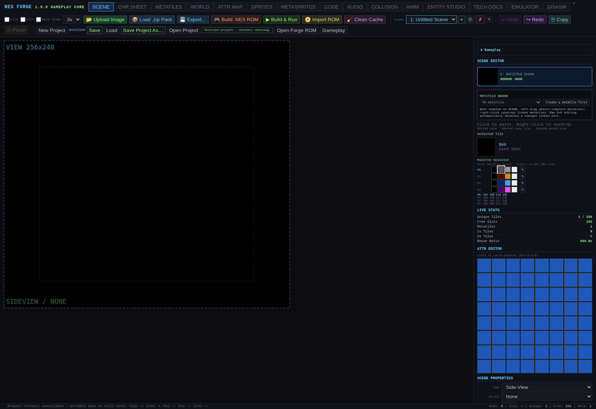
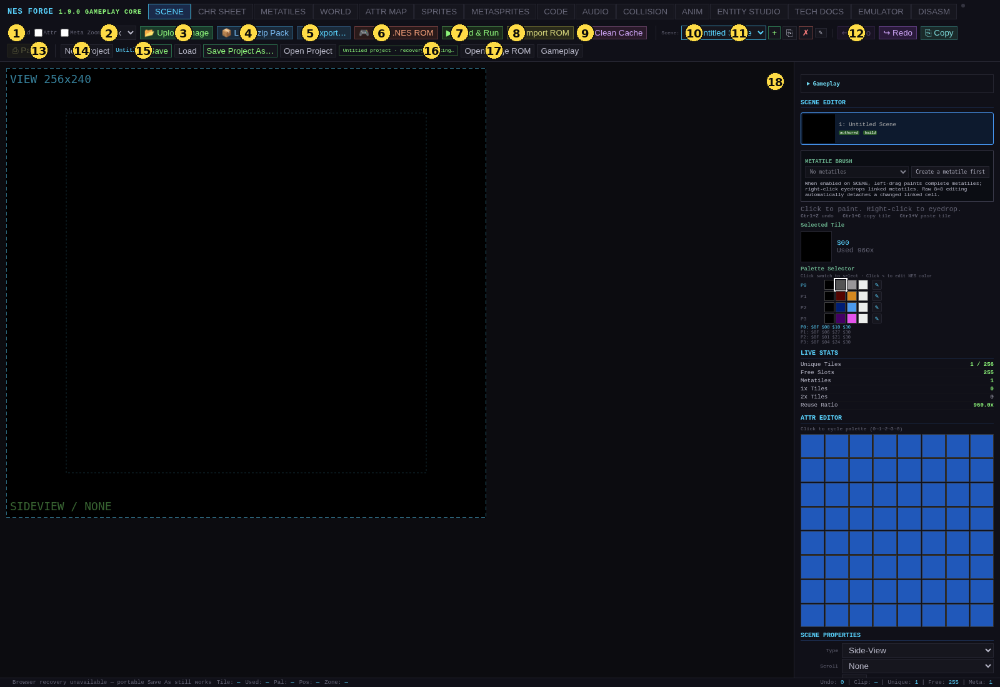

Current instructions: Start with the current user guide and its five workspace chapters. They cover the included audio-tool-import-1 application and take precedence over preserved historical chapters, control rows and version claims below. Use them for composing from scratch, current imports, save formats and supported recovery.
NES Forge user manual
Alpha.11 reading edition · restored complete 1.9.0 manual with current usage notes
Use the Tutorial for the current first-project path, and read Alpha.11 usage updates before the longer reference below. The original full workshop and control chapters have been restored; this is not a claim that every historical control table has been rewritten or revalidated for alpha.11.
The supplied application is 2.0.0-alpha.11 /
audio-tool-import-1, schema 12, SHA-256
1fd884cdc1b568b72e3bc777ef3a0b1a926b6020e8b143d8110a9a9001dc821d.
All older application hashes, dated success totals and future-version
promises below describe the historical edition only.
| Current correction to the historical text | What to use now |
|---|---|
| MusicXML/MIDI export | AUDIO → Export Score Data exports supported scores. It is not a full native project/timbre backup. |
| Source authoring | CODE → Open source workspace → Build source ROM
assembles the bounded forge-6502-v1 NROM profile. Save the
source workspace separately. |
| Source intake | Analyze source is diagnostic inspection; it does not prove a build or migration. |
| Newer editor workflows | Seeded mashup, Movement rules and declared native recovery routes have their own current guides. |
| Mobile diagnostics | Expanded Play exposes current performance readings. Follow the updated triage guide instead of old scheduling/status-line advice. |
| Control inventory and illustrations | The restored tables and images document 1.9.0. Use the current supplement for selected additions. |
Open the full alpha.11 updates, Operator Reference, Reviewer Checklist, or Mobile Performance Triage. Use Feedback_Template.txt to report a difference between a guide and the interface.
Preserved 1.9.0 manual and workshop
Historical chapter scope. The following complete chapters originate in the September 30, 2026 kit. Version/date-specific claims below belong to that edition. Current instructions above override them. Original Markdown is retained verbatim in
Reference/Historical/Documentation_Source/; the rendered reading copy corrects local links and marks known superseded statements.
NES Forge 1.9.0
User Manual and Blank-Project Workshop
Reviewer documentation edition · Gameplay Core — Alpha / mobile-play-1 · September 30, 2026
Start with an empty project, make your own terrain and character, connect the authoring tabs, build a World, and then add supported gameplay and sound. No imported Scout project or prebuilt JSON is required for the workshop.
About the historical 1.9.0 copy: That edition updated the reconstructed comprehensive manual and blank-project workshop for the September 28 Mobile Play candidate. Its original application was included unchanged in the September 30 archive. It is a functional alpha for review, not an accepted release. The September 28 package records 702/702 automated checks in 28 suites; no new application regression run or fresh browser replay of the workshop is claimed by this documentation update.
Start here

Historical blank-project illustration from the corrected Gameplay Core reference. It shows the workshop starting point, not a fresh screenshot of Mobile Play.
Extract the ZIP before opening its contents. Open START_HERE.html for the package entry page, Manual.html for the comprehensive manual, or Manual.pdf for reading and printing. Open NES_Forge.html separately to work in the editor. The focused Tutorial.html / Tutorial.pdf follows the blank-project workshop. Keep the instructions beside the editor in another window.
The workshop is documentation you follow inside ordinary NES Forge. It is not a second application, embedded wizard, special project mode or supplied starter game. Build the first World on the device where you can comfortably use the authoring panels; then use the same generated ROM to review mobile play.
| Historical September 30 review status | Evidence / boundary |
|---|---|
| Core create/build/play workflow | Functional 1.9.0 alpha candidate with the existing September 28 regression evidence. |
| Mobile touch controls | Owner reports they work on September 30; device/browser details are not yet recorded. |
| Mobile audio/video performance | Owner reports lag; cause, scope and measurements remain open. |
| Physical USB/Bluetooth controllers | Implemented through the browser, but actual controller hardware remains untested. |
| Acceptance | Further browser/device checks and owner acceptance remain pending. |
The quickest useful learning order is Orientation → Blank-project workshop → Gameplay Core → Audio → Saving and troubleshooting. Use the tab reference when a particular control is unfamiliar. You do not need to read the architecture documents to complete the workshop.
The supporting Reference/Operator_Reference.html / PDF describes every documented control, and Reference/Control_Index.csv provides a searchable control table. Application source and historical evidence retain their original version statements; use the current status in this manual and the review-kit entry page when those historical statements differ.
Orientation: what NES Forge is doing
NES Forge is an NES authoring application, generated-ROM toolchain, and bundled emulator. Different editor tabs work on different representations. Seeing artwork in one editor does not automatically place it in every other editor or in the running game.
The terrain path is background CHR → Metatile definition → World placement → World Runtime → ROM. The retained animated Player path is sprite CHR → Metasprite pose → Animation → Entity Studio bindings → selected World Player → ROM. Gameplay Core adds reusable Actor Definitions, placed Actor Instances, behavior tables, and scoped variables to supported generated runtimes. AUDIO compiles tracker data when its runtime option is enabled. These paths meet at Build & Run, not merely when you change tabs. [S1, S2, S3]
The four distinctions that prevent most confusion
| Distinction | Meaning in this candidate |
|---|---|
| Scene versus World | A Scene owns source art, palettes and legacy scene/entity data. A World references a Scene's metatile library and places terrain across screens. |
| Sprite versus Metasprite | A raw sprite is a hardware-sized placement. A Metasprite is a reusable composition of pieces with an origin; it is useful for character poses. |
| Entity Studio versus Gameplay Core | Entity Studio supplies retained Player/Target animation bindings. Gameplay Core provides canonical definitions, instances and a bounded behavior evaluator. The compatibility Player still uses the retained executor. |
| Project versus ROM | JSON/ZIP is the native editable backup. A ROM is executable output; the ability to recover editable source from it depends on its backend. |
Why an object sometimes appears in one tab but not another
METASPRITES shows a pose. ANIM shows a selected frame and contacts/events. ENTITY STUDIO previews a selected entity and its bindings. SCENE shows the active scene composition. WORLD shows the World map and its authoring markers. GAMEPLAY CORE is primarily a set of typed authoring tables. None of these is a persistent live view of the running ROM. Use EMULATOR after Build & Run to see the game that was actually compiled. [S1, S4]
Scroll the sidebar all the way down before concluding a panel is missing. WORLD RUNTIME is near the lower part of WORLD; Gameplay Core tables live under the gameplay panel. Collapsed sections must be expanded. The small first canvas you see may be a pose editor rather than the entire Scene.
Hexadecimal tile labels versus numeric inputs
Tile sheets label indices such as $10. That is
hexadecimal 10, which is decimal 16. When a field is an
ordinary number input, enter the decimal value: $01 is 1,
$10 is 16, $11 is 17, and $FF is
255. A wrong tile number can select valid but unrelated artwork.
Build modes at a glance
| Mode | What you get |
|---|---|
| Scene viewer | Displays selected packed scenes; it is not automatically a platformer. |
| First Playable Room | Retained single-room Player/optional Target gameplay configured through the existing gameplay panel. |
| World Runtime | Explicitly selected Player traverses authored Worlds through screen transitions and linked markers. |
| Gameplay Core enabled | Adds the supported canonical Actor/Behavior subset to applicable generated single-room or World execution. |
| Authored assembly | CODE supplies the program. It is an advanced route, not required by the workshop; generated World and Audio features do not silently merge into arbitrary assembly. |
Build & Run builds the current editor project. Run Original plays retained cartridge bytes without applying your current edits. Changing the project does not hot-reload the running game in this release. [S1, S2, S3]
Before your first edit
Save any open project before choosing New Project. Begin with a blank project, leave CODE empty, leave Audio Runtime and Gameplay Core off until the terrain/Player loop works, and enable World Runtime only after its required references exist. Save a native project checkpoint after each major workshop section.
Blank-project World workshop
This is the preserved from-scratch workshop adapted to the current 1.9.0 alpha candidate. The main terrain and retained Player path is deliberately learned with Gameplay Core and Audio off; later chapters add both. You may begin with an 8×8 player to prove the references, then upgrade to a four-piece or six-piece pose. This rebuilt edition does not claim a new automated replay of these steps. [S2, S6]
Workshop I — Start completely blank
Step 1. Open the kit and choose your working window
- Extract the entire package to one folder; leave its companion files and image folders together.
- Open START_HERE.html, then open NES_Forge.html in a separate browser tab or window.
- Keep Tutorial.html or this manual visible beside the application. These instructions do not run inside a separate workshop mode.
- Save/export any project already open before choosing New Project. The workshop starts blank and needs no imported project or ROM.
- For this first pass, leave Gameplay Core and Audio Runtime disabled until the terrain/Player loop is working. Later chapters introduce them separately.
Checkpoint: you can see the normal NES Forge editor and the workshop instructions. You have not overwritten an existing project.
Coordinate convention: cell coordinates are
zero-based. X=0/Y=0 is the top-left cell. SCENE samples use 8×8 tile
positions; WORLD uses 16×16 metatile positions. Tile labels such as
$10 are hexadecimal; type 16 in an
ordinary numeric Tile input.
Step 2. Create the project
- Open the included NES Forge 1.9.0 Alpha — Mobile
Play application,
NES_Forge.html. - Click New Project.
- Stay with the default scene, My First Room.
- Make sure CODE is empty.
A blank New Project starts with:
- one Side-View source scene,
- no Worlds,
- no entities,
- no metasprites,
- no animations,
- blank BG CHR,
- blank Sprite CHR,
- World Runtime disabled.
You can rename the project/scene later. For the tutorial,
My First Room is fine.
Workshop II — Create terrain from your own CHR
If you already know how to draw CHR tiles, this section is the important bridge from CHR into METATILES and then WORLD.
Step 3. Draw one background tile
Open CHR SHEET.
- Select BG Bank ($0000).
- Select tile $01.
- Draw any visible 8×8 ground/brick pattern.
- Leave tile $00 blank. We will use
$00as empty/background space.
Your artwork does not have to match Scout. Mechanically, we only need:
$00= empty-looking tile,$01= visible ground tile.
Choose/edit a BG palette so $01 is visible.
Checkpoint
You should now have at least one visible BG tile in CHR SHEET.
Step 4. Tell NES Forge that tile $01 is solid
Open COLLISION.
- Under Active Property, choose 1 - Solid (blocks all).
- In Tile Assignments, click BG tile $01.
- Leave
$00as 0 - Empty.
For the retained World Runtime profile, executable terrain may use Empty and Solid collision. Other authored collision types are retained by NES Forge but are not currently valid for World Runtime terrain.
Step 5. Build a 16×16 "Ground Surface" sample in SCENE
A metatile is four 8×8 BG tiles:
TL TR
BL BRWe are going to make a useful Scout-style ground surface whose top 8 pixels are empty and bottom 8 pixels are solid:
$00 $00 collision: Empty Empty
$01 $01 Solid SolidIn CHR SHEET
- Select BG Bank.
- Click tile
$01so it becomes the current Scene brush.
In SCENE
At the top-left 16×16 cell of the Scene:
- Leave the top-left 8×8 tile as
$00. - Leave the top-right 8×8 tile as
$00. - Paint
$01into the bottom-left 8×8 position. - Paint
$01into the bottom-right 8×8 position.
The two painted bottom tiles are Scene tile coordinates (0,1) and (1,1). They are the second row of 8×8 tiles within the top-left sample.
You have just created a temporary 16×16 source sample.
Step 6. Convert that sample into a reusable metatile
Open METATILES.
- Use Select cells.
- Click the 16×16 sample cell you just made.
- Click + From Selected Cell.
- Rename it Ground Surface.
- Set Category to
terrainif desired.
The Selected Metatile should represent:
CHR QUADRANTS
TL = $00
TR = $00
BL = $01
BR = $01
COLLISION QUADRANTS
TL = Empty
TR = Empty
BL = Solid
BR = SolidBecause $01 was marked Solid in COLLISION before the
metatile was created, NES Forge should capture that collision into the
bottom quadrants.
Detach the sample cell
Click Detach Selected Cell.
This is useful for a from-scratch workflow: it keeps Ground Surface in the Metatile Library, but prevents this temporary source sample from automatically seeding the first World when you press + World.
If you do not detach sample cells, that is not data loss or a bug. A new World is initially seeded from the source scene's linked 16×15
metaMap, so those linked sample cells can appear in the first World. You can simply erase them there. Detaching first gives you a cleaner blank World.
Step 7. Create a full Solid Block metatile
We also want a completely solid 16×16 block.
In SCENE
Use $01 to turn the same temporary 16×16 source cell
into:
$01 $01
$01 $01In METATILES
- Select that same 16×16 cell.
- Click + From Selected Cell.
- Rename the new definition Solid Block.
- Confirm all four Collision Quadrants are Solid.
- Click Detach Selected Cell again.
You now have a real reusable tileset even though the Scene itself is only acting as a source/staging area.
Checkpoint
In METATILES you should have at least:
- Ground Surface — bottom half Solid,
- Solid Block — all four quadrants Solid.
The Scene's linked map can be empty; the library definitions remain available.
Workshop III — Build the actual multi-screen World
Step 8. Create your first World
Open WORLD.
Click + World.
Then explicitly verify/set:
- Name:
My First World - Tileset Scene:
My First Room - Width:
2screens - Height:
1screen
A World screen is 16×15 metatile cells. Therefore this World is:
32 cells wide × 15 cells tall
512 px wide × 240 px tallThe World editor only shows one NES screen viewport at a time. Use the left/right View arrows or the minimap to move between screen 1 and screen 2.
If METATILE BRUSH is empty
Stop here and check Tileset Scene.
The selected scene must contain a Metatile Library. The WORLD sidebar should say something like:
My First Room · 2 metatiles available.
If it says 0 metas, return to METATILES and create the library first, or choose the correct Tileset Scene.
Step 9. Paint a floor across both screens
Use WORLD TOOLS → Paint or Rect.
A reliable beginner layout is:
- metatile row 12 =
Ground Surface - rows 13–14 =
Solid Block
With rows numbered 0–14, row 12 is the third row from the bottom. The playable surface is in that row, with additional solid terrain below it. This layout is authored manually; no fixture is needed.
Screen 1
- Choose Ground Surface in the Metatile Brush/Palette.
- Paint row 12 across all 16 columns.
- Choose Solid Block.
- Paint rows 13 and 14 across all 16 columns.
Screen 2
- Click the → View button or click the second screen in the minimap.
- Repeat the same three terrain rows.
You should now have a continuous floor spanning two NES screens.
Empty World cells are visually blank and collision-empty. You do not need to fill the sky with an "empty" metatile.
Step 10. Place the start Spawn
Still in WORLD:
- Choose WORLD TOOLS → Spawn.
- On screen 1, click approximately cell X=3, Y=12.
- Switch back to Select and click the Spawn if you
want to rename it, for example
Player Start.
World Runtime uses the marker's cell to calculate the player's centered-feet position:
world pixel X = cell X × 16 + 8
world pixel Y = cell Y × 16 + 8For (3,12), choose the fourth column and third
row from the bottom of screen 1. The starting feet are
approximately (56,200) pixels in the World.
The Player body must fit inside the World and must not intersect Solid collision at the start marker.
Important distinction
The Spawn marker determines where World Runtime starts the Player.
The Player entity's X/Y in ENTITY STUDIO identifies the authored source entity; it is not the World starting position.
Workshop IV — Build the player from your own sprite CHR
Step 11. Draw one sprite tile
Open CHR SHEET.
- Choose Sprite Bank ($1000).
- Select tile $10.
- Draw a simple visible 8×8 character/icon.
- Choose/edit a Sprite palette so it is visible.
Use at least one nonzero sprite pixel value in the
artwork: sprite pixel index 0 is transparent. $10 is
decimal 16 if entered in a numeric Tile field. For the first successful
build, one 8×8 piece is enough; larger poses can follow afterward.
Step 12. Turn the sprite tile into a metasprite pose
Open METASPRITES.
- Click + New frame.
- Name it Hero Stand.
- Confirm Source scene = My First Room.
- Use Sprite size = 8 × 8.
- Click + Piece.
- Set the piece:
- Tile =
$10/ decimal16 - X =
0 - Y =
0 - Palette =
Sprite palette 0or the palette you used
- Tile =
- Click Set origin at feet.
For a single 8×8 piece at (0,0), Set origin at feet
places the anchor at the horizontal center and bottom of the artwork:
approximately (4,8).
That cyan origin cross is important. World Runtime positions and facing are based on the reusable frame origin, not on the upper-left corner of the tile.
Checkpoint
You should see Hero Stand in the Metasprite Composer and no missing-source warning.
Workshop V — Create the required animation states
Step 13. Make idle
Open ANIM.
- Click + Add Animation.
- Name:
Hero Idle - State:
idle - Loop: On
- Select the first frame.
- Set Duration to about
12ticks/frames. - Set Frame source = Metasprite.
- Set Metasprite = Hero Stand.
One animation frame is enough for the first build.
Step 14. Make walk
Create another animation:
- Name:
Hero Walk - State:
walk - Loop: On
- Duration: about
8 - Frame source: Metasprite
- Metasprite: Hero Stand
For now it is okay for walk to reuse the exact same art
as idle. We are proving the complete authoring chain
first.
Later, create Hero Step A / Hero Step B
metasprites and add multiple frames to this animation.
Step 15. Make attack
Create a third animation:
- Name:
Hero Attack - State:
attack - Loop: Off
- Duration: about
8 - Frame source: Metasprite
- Metasprite: Hero Stand
This detail is mandatory:
World Runtime requires the Player's attack animation to be nonlooping.
The retained World Runtime profile plays this animation when you press X or S / NES B / touch B, but it does not yet apply generic World target damage. All three tutorial animations currently reuse Hero Stand, so the attack state has no visibly different artwork yet. That is expected; later, give attack a distinct pose if you want to see the change.
Optional jump
You may create and bind a jump state. If you do not,
World Runtime falls back to idle artwork while airborne.
Workshop VI — Create the Player entity and bind the animations
Step 16. Add a Player in ENTITY STUDIO
Open ENTITY STUDIO.
Under PLACE AN ENTITY:
- Type = Player
- Scene X =
48 - Scene Y =
200 - Click Add at X / Y.
Those Scene coordinates are reasonable source-authoring values, but remember: the World Spawn determines the runtime start position.
Step 17. Bind the required states
With the Player selected, under STATES create these bindings exactly:
| State name | Animation |
|---|---|
idle |
Hero Idle |
walk |
Hero Walk |
attack |
Hero Attack |
For each one:
- Enter the lowercase State name.
- Choose the matching Animation.
- Click Assign state.
Then set:
- Default state:
idle - Default facing:
Right
The state names matter. World Runtime looks specifically for:
idle
walk
attackand optionally:
jumpIf any required state is missing, the World build rejects instead of guessing.
Workshop VII — Connect everything in WORLD RUNTIME
Step 18. Enable World Runtime
Return to WORLD and find the WORLD RUNTIME section near the bottom of the sidebar.
Check:
Build this project as World Runtime
Then explicitly choose:
- Start world:
My First World - Start marker: your
Player Start/ Spawn marker - Player source scene:
My First Room - Player: the Player entity you created
NES Forge intentionally does not infer these selections from whichever object happens to be selected in another tab.
Step 19. Set movement and body values
Expand Movement and collision body.
For the tiny one-piece tutorial character, use:
| Setting | Tutorial value |
|---|---|
| Move speed | 2 |
| Jump speed | 9 |
| Gravity | 1 |
| Maximum fall | 6 |
| Body width | 8 |
| Body height | 8 |
Set both body dimensions explicitly to 8. The existing defaults are 12×22 and do not match the tiny first character. A later larger character can use a larger movement body once its artwork and starting clearance are checked.
World Runtime body width must be even because Player X is the center of the feet.
The WORLD RUNTIME status should become green and report that the start/player references are valid. Full map/collision/resource validation happens during Build & Run.
Workshop VIII — Build and play your own World
Step 20. Build & Run
Click Build & Run in WORLD RUNTIME or the main toolbar.
NES Forge should compile the project as the World backend and load the generated mapper-0 ROM in the bundled emulator.
For a mobile play check, open EMULATOR → Play view and choose Run if paused. Use the on-screen D-pad and A/B buttons with separate fingers. Fullscreen requests native browser fullscreen; if unavailable, the expanded view stays inside the browser. Exit to editor returns to authoring without rebuilding or resetting the ROM. See the Mobile Play controls in the operator reference for controller setup and input-release behavior.
Run/Pause starts/stops emulator execution. The on-screen Start button sends NES Start to the game; in this workshop's generated World profile it restarts at the configured start marker. They are different operations.
Controls:
| Key | Action |
|---|---|
| Left / Right / touch D-pad | Move |
| Z or A / NES A / touch A | Jump |
| X or S / NES B / touch B | Play attack animation |
| Up / touch D-pad Up | Use a linked Entrance/Exit |
| Enter / NES Start / touch Start | Restart at configured start marker |
Walk to the right edge of screen 1.
When the Player crosses into the second World screen, the runtime should change the displayed NES screen and continue the same World-space movement/physics.
The current World profile uses complete 256×240 screen transitions, not smooth pixel scrolling.
This first build is intentionally silent because Audio Runtime is still off. It also has no distinct walking/attack artwork until you add different poses. Use movement, jumping, screen changes and restart as the first checks. Evaluate the reported audio lag later with authored music enabled or a known sounding, independently shareable ROM.
Save and reopen checkpoint
- Use Exit to editor if Play view is expanded.
- Choose Save Project As… and save a native project JSON to a location you can find again. Verify the downloaded/saved file exists.
- Use Open Project… to reopen that saved JSON.
- Check that
My First World, its tileset, selected Player and required animation bindings remain present, then choose Build & Run again.
Checkpoint: the reopened project still produces your
moving/jumping Player and the two connected screens. Save the native
project even if you also export a .nes file; this JSON is
your editable workshop backup.
What you have built at this point
Without importing any prebuilt project, you have authored:
Your BG CHR
↓
Your Solid collision
↓
Your reusable 16×16 Metatiles
↓
Your 2-screen World
↓
Your Spawn
Your Sprite CHR
↓
Your Metasprite pose
↓
Your idle / walk / attack animations
↓
Your Player entity bindings
All of the above
↓
World Runtime
↓
Generated 6502 NES ROMThat is the complete from-scratch path.
Workshop IX — Extend it into a Scout-style linked World
You can extend your own two-screen World with a separate one-screen area and linked markers. Create both maps manually.
Step 21. Create World 2
In WORLD:
- Click + World.
- Explicitly select Tileset Scene = My First Room.
- Name it
Courtyard. - Width =
1. - Height =
1. - Paint row 12 with Ground Surface.
- Paint rows 13–14 with Solid Block.
- Place a Spawn around cell
(4,12). - Rename it
Courtyard Spawnif desired.
Your project now has two independent World maps using the same source tileset.
Step 22. Add an Exit from World 1 to World 2
Select My First World in the World dropdown.
- Move the View to screen 2.
- Choose WORLD TOOLS → Exit.
- Place it somewhere reachable on the floor, for example around global
cell
(25,12). - Choose Select and click the Exit.
- Under SELECTION / PROPERTIES, set:
- Target World:
Courtyard - Target Marker:
Courtyard Spawn
- Target World:
Both destination fields are required.
The destination must be a Spawn or Entrance.
Step 23. Optional return link
In Courtyard:
- Place another Exit in a reachable floor cell.
- Select it.
- Set:
- Target World =
My First World - Target Marker = your original Player Start Spawn
- Target World =
Build & Run again.
Stand in the Exit cell and press a new Up press.
The runtime changes to the target World and positions the Player at the destination marker.
Holding Up through a reciprocal transition does not immediately bounce you back; the runtime requires a new press.
Workshop X — Rooms and Cameras: when to use them
You do not need Rooms or Camera Regions for the first playable World. If no Camera Region matches the Player, World Runtime simply displays the Player's current World screen.
Once basic traversal works, add them deliberately.
Rooms / Chunks
Rooms describe named World regions. They do not create invisible walls and do not instantiate Scene entities.
Runtime requirements for Room rectangles:
- X and width are aligned to 16 metatile cells (whole NES screens horizontally),
- Y and height are aligned to 15 metatile cells (whole NES screens vertically),
- rectangles stay inside the World,
- Room rectangles may not overlap other Rooms.
For a simple 2×1 World, you can use + Current Screen once on screen 1 and once on screen 2.
Camera Regions
Camera Regions are also whole-screen aligned and may not overlap other Camera Regions.
Modes:
| Mode | Behavior |
|---|---|
follow |
Display follows Player screen on both axes. |
horizontal |
Follows Player screen column; holds the region's first row. |
vertical |
Holds first column; follows Player screen row. |
locked |
Always shows region's first/top-left screen. |
Cameras choose the displayed screen. They do not prevent movement.
A player can therefore move off the displayed screen when using a locked or axis-limited Camera Region; the sprite is clipped rather than wrapped.
Workshop XI — Turn the tiny player into a Scout-style player
Once the one-piece character works, upgrade the art without changing the World pipeline.
Step 24. Build a larger metasprite
In METASPRITES, a Scout-like standing pose can be made from six 8×8 pieces arranged roughly as:
[0][1]
[2][3]
[4][5]That produces a 16×24-pixel character.
A convenient source coordinate layout is:
X = 0 / 8
Y = 0 / 8 / 16Then use Set origin at feet. For a 16×24 pose
beginning at (0,0), the origin becomes approximately
(8,24).
This is the same basic anchor convention used by the Scout reference asset.
Step 25. Make distinct poses
Create or duplicate frames such as:
- Hero Idle
- Hero Step A
- Hero Step B
- Hero Attack
Then change ANIM:
idle→ one or more Idle frames,walk→ alternate Step A / Step B,attack→ one or more attack frames, Loop off,- optional
jump→ airborne pose.
You can also author per-frame contact boxes and events in ANIM. With
Audio Runtime enabled, supported sound events execute
through the retained animation paths. Contact boxes and other events do
not automatically enable richer generalized combat or scripting.
Workshop XII — Where the other tabs fit
ATTR MAP
Use ATTR MAP / Scene palette editing if your source 16×16 sample must use a specific BG palette row. A Metatile stores one NES palette row along with its four tile IDs.
SPRITES
The SPRITES tab edits raw Scene OAM. For World Runtime Player authoring, you can skip it and compose frames directly in METASPRITES.
Alternatively, build a pose in SPRITES and use METASPRITES → Capture scene OAM to turn the visible OAM pieces into a reusable frame.
AUDIO
The included candidate can compile tracker music and SFX into generated ROMs. Enable Compile Audio Runtime explicitly. Follow the Audio workshop after the terrain/Player loop works.
CODE
World Runtime generates its own code. If custom assembly exists in CODE, the WORLD RUNTIME status rejects the build and tells you to save/clear the custom assembly first.
COLLISION
The COLLISION tab is useful when creating metatiles from Scene samples because METATILES captures the source tile properties into four 8×8 collision quadrants.
After a metatile exists, you can also edit its four collision quadrants directly in METATILES.
Workshop XIII — Common from-scratch failures
"Tileset has no metatiles" / empty World brush
Cause: The World points to a Scene with no Metatile Library.
Fix:
- Open METATILES on the intended Tileset Scene.
- Create definitions with + From Selected Cell or Analyze Scene → Library.
- Return to WORLD.
- Explicitly select the correct Tileset Scene.
My new World contains weird blocks I used only as metatile samples
Cause: + World seeds its first
screen from the source Scene's linked metaMap.
Fix: Before creating the World, use Detach Selected Cell on temporary source samples, or erase those cells in WORLD after creation.
The Metatile Library itself is not deleted by detaching a Scene cell.
"The
player needs an idle / walk /
attack animation binding"
In ENTITY STUDIO, bind these exact lowercase state names:
idle
walk
attackjump is optional.
"The player attack animation must be nonlooping"
Open ANIM → Hero Attack and turn Loop off.
Player is invisible
Check:
- The artwork is in Sprite Bank, not BG Bank.
- The metasprite piece uses the correct Sprite CHR tile.
- The piece uses a visible Sprite palette.
- The animation frame source is Metasprite.
- ENTITY STUDIO binds that animation to the required state.
Player appears above/below where I expect
Check the Metasprite origin and World Runtime body height.
The Player's World position represents the center of the feet, not the top-left corner of the art.
Use Set origin at feet in METASPRITES as a reliable starting point.
Starting spawn intersects solid collision
Move the Spawn higher or change the collision layout.
For the terrain pattern in this tutorial:
row 12 = Ground Surface (top empty / bottom solid)
row 13 = Solid Block
row 14 = Solid Blockplacing the Spawn at approximately Y=12 is
appropriate.
The compiler does not silently move an invalid Spawn to a nearby safe position; it rejects the build.
I painted collision in SCENE but WORLD behaves differently
World Runtime executes the collision stored in the Metatile definitions used by WORLD.
SCENE tile properties help create those collision quadrants when you capture a metatile, but WORLD is not executing the SCENE nametable as the level.
Build complains about custom assembly
Clear CODE. World Runtime generates its own engine code.
It changes screens instead of smooth scrolling
Expected in the current World traversal profile.
World Runtime tracks World-space movement and changes the displayed camera by complete NES screens. Smooth scrolling is not implemented yet.
My Enemy/NPC entity does nothing in World Runtime
Expected in the current World traversal profile.
The retained entity workflow executes the selected bound Player. For additional supported actors, use Gameplay Core, enable it explicitly, and choose valid reachable World/Room placements. Legacy Scene enemies are not implicitly converted into canonical actors.
Workshop XIV — Save and reopen your work
Save the editable source
Use Save Project As… or Export… for a complete native JSON/ZIP backup, and browser Save as an additional convenience. Do not substitute a single-room ROM for a native Gameplay Core backup.
Export the ROM
Use Build .NES ROM when you want the generated cartridge file without immediately running it.
Reopen a Forge World ROM
Use Open Forge ROM, not append-style Import ROM, for the new World Runtime layout.
A WG17 World ROM carries a checked compressed authoring-source record, allowing NES Forge to reconstruct the editable project when reopened.
Run Original ROM plays the retained opened/imported ROM bytes independently of your current edits.
Workshop XV — The entire blank-project recipe on one page
Use this as the quick checklist after you have completed the tutorial once.
- New Project.
- CHR SHEET / BG Bank: draw terrain tiles.
- COLLISION: mark terrain source tiles Empty/Solid.
- SCENE: arrange temporary 2×2 BG tile samples.
- METATILES:
+ From Selected Cell; name definitions; confirm collision quadrants; detach temporary sample cells if you want a blank World seed. - WORLD:
+ World; choose the Tileset Scene; choose dimensions; paint terrain. - WORLD: place at least one Spawn or Entrance for the start.
- CHR SHEET / Sprite Bank: draw Player tiles.
- METASPRITES: make reusable pose(s); Set origin at feet.
- ANIM: create
idle,walk, and nonloopingattack; assign metasprite frames. Optionaljump. - ENTITY STUDIO: create a Player;
bind
idle,walk,attack; choose default state/facing. - WORLD → WORLD RUNTIME: Enable; choose Start World, Start Marker, Player source Scene, Player; set movement/body dimensions.
- Leave CODE blank.
- Build & Run.
- After the first build works, add more screens, a second World, Exit/Entrance links, Rooms, Camera Regions, larger metasprites, and richer animation.
Gameplay Core workshop
This chapter builds on the World you made in the blank-project workshop. It does not replace the World Player setup. The included candidate's GAMEPLAY CORE · TYPED TABLES panel adds new canonical records while retaining the existing Player executor. [S1, S4]
Find the tables and choose placement first
Open the gameplay panel and expand GAMEPLAY CORE · TYPED TABLES. Check Enable canonical Gameplay Core. Before using Add template or New Actor Instance, choose the placement kind and its owner in the controls at the top of the tables:
| Kind | Choose | Intended location |
|---|---|---|
scene |
A Scene | Retained single-room placement; not a shortcut for placing the actor throughout a World. |
world |
A World | World-owned placement at authored coordinates. |
room |
A World and one of its authored Rooms | Placement belonging to that Room and usable with its Room-scoped bindings. |
For the first exercise choose world → My First World. A World actor's coordinates are authored World coordinates, not the coordinate of the currently selected screen in the editor. For example, X greater than 255 is on a later horizontal screen. Consult its placement row rather than assuming a newly added template appears under the mouse.
Expected result: the panel reports the number of definitions, instances, behaviors, and profile variables. Enabled here means the system is requested; only the executable build determines whether every configured operation is supported.
Understand definitions, instances and behavior selection
An Actor Definition is a reusable archetype. Its component/default changes affect instances referencing it. An Actor Instance is an authored placement with its own position, facing, parameter overrides and persistence bindings. A Runtime Actor is transient game state; its slots/timers are not save-game data. A Persistent Variable stores one explicitly declared Room/World value. [S1]
The table's definition selection determines which Typed Components / Parameters you are editing. The Canonical State Table has its own Behavior selector. Check both before editing: a newly created definition can reference an existing behavior. Creating a new definition does not guarantee a private copy of that behavior. Use New Behavior and assign it in the definition row when you need an independent behavior.
Likewise, New Actor Instance initially references an available definition. Change its Definition selector explicitly to the one you intend to place.
Add one template at a time
The five available recipe families are Sideview Player, Ground Patrol Enemy, Stationary Contact Hazard, Collectible Pickup, and Switch + Door. Recipes create ordinary editable records; the template name is not a separate runtime script. [S1, S4]
Begin with Collectible Pickup. Select the recipe and click Add template. Inspect the newly created Actor Definition, Behavior, Actor Instance and Persistent Variable. Move the instance into reachable empty space above your floor and select the proper World/Room owner. Check its Render component's source Scene, sprite tile and palette; do not assume the recipe has drawn custom art for you.
The recipe's default Y is 208, which is not a universal placement recommendation. In the earlier half-solid ground workshop, the ground begins at pixel Y=200. Move generic artwork above that floor according to its displayed dimensions rather than copying the Player's feet coordinate into an unrelated top-left placement field.
Build & Run and walk into the pickup. Checkpoint: the instance's supported collection behavior changes its bound variable and deactivates it. Test a supported leave/re-enter path to verify its scoped state persists during the session. Rebuilding or resetting the runtime starts a fresh session; it is not a durable game save.
Next add Ground Patrol Enemy, select its instance
and place it on a visible area with reasonable motion bounds. Inspect
its moveWithinBounds action rather than assuming the name
means pathfinding, terrain-aware navigation, or generalized physics.
Contact damage is owned by Behavior contactDamage actions.
Build and check movement and contact separately.
For Stationary Contact Hazard, inspect the scoped enable variable and the state synchronization action before changing defaults. Keep health/damage values within the typed field bounds. Add one actor, test it, then add the next; this makes a wrong placement or binding much easier to diagnose.
Player compatibility warning
The Sideview Player template is a compatibility binding. It does not create a second independent generic controller or remove the need for your World Runtime Player source and animation bindings. Movement, collision and Player animation still use the retained executor. Do not interpret an Input component on an arbitrary new definition as a complete new playable-character runtime. [S1]
Rendering warning
The generic actor's Render component uses its supported source art fields. The retained Player's multi-piece, animated Metasprite path is not automatically assigned to every canonical actor. Configure only the visual bindings exposed for the selected actor/profile. A Metasprite in the library is not by itself a placed or animated enemy.
Use Switch + Door as the alpha state example
Add Switch + Door after the pickup is working. It creates linked records; inspect both instances and their shared persistent variable. Give them distinct visible art and separated positions. Build and trigger the switch according to its authored transition conditions.
Expected result: the shared variable changes and the
Door's active/visible state changes. Do not expect a closed Door
to block movement. The owner explicitly deferred physical
blocking. In this profile syncActiveFromPersistent can
deactivate an active actor, but inactive actors do not keep evaluating;
reversing the variable does not reactivate that actor until
reconstruction. This is a one-way alpha state/persistence demonstration,
not a finished reversible gate or door-collision system. [S1]
Changing the recipe's name, art or shared flag does not enable later collision capabilities. Retain native project backups before experimenting with state transitions.
Author a timed behavior without a recipe
This exercise shows how to build a small behavior using the ordinary controls. It is a source-derived walkthrough for this rebuilt edition, not a newly executed runtime test.
- In Canonical State Table, choose New
Behavior. Rename the behavior
Timed Token. - Rename its first state
Waiting. Leave that state selected as the Initial state. - Click Add state and name the second state
Gone. - Under Waiting → onEnter, choose Add
action, select
setTimer, and setticksto 120. Keep this action out ofonTick; repeatedly resetting the timer would defeat the countdown. - Under Gone → onEnter, add the
despawnaction. - Click Add transition. Set From to
Waiting, To toGone, and Priority to 0. - The new transition begins with an
alwayscondition. Replace it withtimerDone. Leavingalwayswould make the transition immediate rather than timer-controlled. - Click New Actor Definition, name it
Timed Token, and assign the Behavior selector to your newTimed Tokenbehavior. Check that its Behavior component is enabled. - In Typed Components / Parameters, add a Render component. Choose your source Scene and a visible sprite tile/palette using the typed controls.
- Choose the desired World placement at the top of the panel. Click
New Actor Instance, then set its Definition selector to
Timed Tokenand choose a visible, reachable position. - Build & Run. The intended result is a visible token that despawns when its timer completes. At a nominal 60 ticks per second, 120 ticks is about two seconds. Real elapsed time follows emulator execution speed.
What this proves conceptually: a template is optional. States, transitions, typed conditions and actions can describe a supported behavior directly. It does not authorize arbitrary scripting or imply every canonical dropdown operation can execute on mapper 0.
Removal order
A state may be referenced by the Initial state selector and transitions. Before removing it, retarget/remove those references. Before removing a persistent variable, remove or change its actions and instance bindings. Before removing a definition, handle its placed instances. Validation errors are preferable to silently leaving broken executable references.
Create a persistent variable and bind it intentionally
Use New persistent variable under Room / World Persistent Variables. Choose a Boolean, bounded unsigned integer, or Enum; set its name, owner, type and default value. For a Room variable, choose the authored Room in the correct World. The current single-room backend can use its Scene as the logical Room owner; that is not a new general Scene persistence scope. [S4]
Select the Actor Instance and click Add binding. Choose the compatible declared variable and its purpose. Actor Instance bindings are authoritative. The component table marks persistence mirrors as mirrors rather than providing a second independent routing source. Conditions/actions use explicit variable IDs; a similar display name in a different World is not the same variable.
For a World-level switch affecting another Room, both actors must deliberately refer to the same World variable. For a room-local collectible, use that Room's variable and Room placement. Cross-owner and incompatible references are build errors; do not solve them by renaming IDs until validation happens to pass.
Session semantics: normal supported Room/World reconstruction retains declared values. Runtime Actor timers, velocity and working state reconstruct. Runtime reset/power-cycle/newly loaded build returns to authored defaults. There is no SRAM, password, save-slot UI or checkpoint system in 1.9.0. [S1]
Work within the current executable vocabulary
The canonical authoring vocabulary is broader than the mapper-0 executable subset. Keep this distinction visible while learning. [S4]
| Executable conditions | Executable actions |
|---|---|
always |
persistentSet |
inputHeld |
despawn |
inputEdge |
setTimer |
timerDone |
moveWithinBounds |
overlapPlayer |
contactDamage |
persistentCompare |
syncActiveFromPersistent |
Every operation requires its typed operands. setTimer
needs ticks; a persistence operation needs a valid
variable/value; motion bounds must be consistent. Operations such as
setFacing, setVelocity,
accelerate, selectAnimation or
emitTrigger may exist canonically but are not permission to
execute them in the current bounded profile. Read the actual profile
error and either use a supported operation or keep the work as
authoring-only.
Disabling a Behavior component keeps its records and may keep the actor placed/rendered, but the corrected profile performs no behavior lifecycle work: no entry/tick/exit actions, transitions, timers or behavior-driven damage/persistent writes. Do not confuse disabled Behavior with despawning the actor.
The runtime plan limit is 12 executable Actor Instances total, including the compatibility Player, and 64 one-byte persistent values. A reachable World added later can increase the same total. Unreachable records can remain in the project, but the compiler reports exclusions; it must not silently discard reachable actors to fit capacity. [S1]
Audio workshop
Audio preview and cartridge audio are separate choices. The AUDIO tracker can preview notes in the browser, but the generated ROM plays authored music only when Compile Audio Runtime is enabled. MIDI and MusicXML feed this same tracker model rather than a separate player. [S3]
Make a small melody yourself
- Open AUDIO and click + Add Instrument. Select the instrument and give it a useful name.
- Set a pulse duty and inspect the Volume and Arpeggio envelopes. A nonlooping volume envelope ends in silence; that can be desirable for plucked notes. Keep the default envelope initially rather than changing every setting at once.
- Select a cell in Pulse 1 and enter notes with the displayed tracker piano keys: Z–M for the lower range and Q–U for the higher range. Arrow keys navigate; Delete clears a note, while Backspace creates a cut.
- Place a few separated notes, then use the transport Play and Stop. Confirm the selected pattern/order is the one containing the notes.
- Set Tempo and Speed deliberately. Pattern Order selects which pattern each channel plays; adding a pattern does not by itself make it part of the song.
- In NES Runtime, check Compile Audio Runtime and retain Autoplay tracker order as music for background music.
- Keep CODE empty for generated World gameplay. Build & Run, then listen in EMULATOR with its Audio control enabled.
Checkpoint: hearing the tracker preview is not the completion criterion. The compiled ROM should play music while the game runs. Audible browser output still depends on the browser allowing audio after user interaction and on your device/output settings.
Connect a short SFX to an animation
Use a separate tracker pattern for a short effect so it does not unintentionally replace your background melody. Add an SFX definition in the Audio Runtime panel. Set its Name, hardware Channel, Pattern, Start row and End row. The row range is inclusive. Record its stable SFX ID.
In ANIM, select a retained Player animation such as
Hero Attack. Select the frame that should produce sound,
add an event of type sound, and set its value to the
SFX ID (a unique SFX name is also accepted by the documented resolver).
Enable Audio Runtime and rebuild.
Press the attack input and listen for the frame-entry sound. The event fires once when the runtime enters the frame, not once every rendered frame while it stays selected. Only one SFX plays at a time; a request arriving while an SFX is active is ignored. Its selected channel returns to music after the effect finishes. A scene viewer has no animation executor, so it only autoplays music. [S3]
Import MIDI or MusicXML
Save a native project checkpoint first. Use the import controls in AUDIO. After import, inspect the generated instruments, patterns, and Pattern Order before building. Import appends normal patterns/instruments and changes the music order while retaining existing SFX pattern references; it is one undoable operation and does not enable Audio Runtime automatically. [S3]
| Format | Supported input and boundaries |
|---|---|
| MIDI | Standard MIDI format 0 or 1, PPQN timing, pitch, velocity, initial tempo, track/program information. MIDI channel 10 maps to Noise. Format 2 and SMPTE timing reject. |
| MusicXML | Uncompressed score-partwise XML, divisions,
notes/rests/chords, durations, backup/forward timing, initial tempo.
Compressed .mxl is unsupported. |
| Arrangement | Sixteenth-note row quantization, three simultaneous pitched voices and one Noise voice. Excess polyphony/overlapping percussion rejects instead of silently deleting notes. |
| Tempo | Later tempo changes flatten to the initial tempo with a warning. |
Alpha.11 update: MIDI and MusicXML score export are now available through AUDIO → Export Score Data. The historical import description above is not a claim of complete interchange fidelity. DPCM, executable tracker effects, tablature transcription and image/PDF score recognition remain outside the supported workflow described here; native project Save As is the full authoring backup. See the alpha.11 updates at the top of this manual.
PART II - COMPLETE OPERATOR / CONTROL REFERENCE
Operator reference scope
Control-by-control reference · 1.9.0 Gameplay Core — Alpha / mobile-play-1 · September 30, 2026
Application source package:
NES_Forge_1.9.0_Alpha_Mobile_Play_Candidate.zip
Source package SHA-256:
aa734c7e734adea8c4821ac57ec2297d105cb1a5e9813635a0a52ad9f2f77088
Application SHA-256:
e7c75ccd43007c46b5e0336105f6551f4b6183cc39730802cd1fba226eb7fe12
Historical identity: These hashes identify the
application/source in the original September 30 kit, which is retained
separately. This kit's root NES_Forge.html is alpha.11; see
the current identity above. The old application/source ZIP is not
duplicated in this kit.
Historical September 2026 status: The original 1.9.0 package was a functional alpha candidate. Its September 28 automated run passed 702/702 checks in 28 suites; this is not evidence for the current alpha.11 application. On September 30 the owner reported that touchscreen controls work on mobile, and also reported audio/video lag. Physical controllers remain untested; the device, browser/version, ROM and performance measurements for that report have not been recorded. This documentation update neither fixes performance nor establishes broad device compatibility.
How to read the tables
- Project data means the control changes saved authoring data.
- Editor view/selection changes what you see or what will be edited, without itself changing project semantics.
- Build output creates or changes an external ROM/package.
- Runtime means the compiled game/emulator behavior is affected when the selected runtime supports that capability.
- A control can be authorable but still be unsupported by the current generated runtime profile; in that case executable builds should reject it rather than silently ignore it.
Global UI map

Historical toolbar illustration from the corrected Gameplay Core reference. It locates the existing editor controls; Mobile Play controls added afterward are documented below.
| # | Area |
|---|---|
| 1 | Grid / Attr / Meta overlays |
| 2 | Global canvas Zoom |
| 3 | Upload Image |
| 4 | Load .zip Pack |
| 5 | Export project ZIP |
| 6 | Build .NES ROM |
| 7 | Build & Run |
| 8 | Import ROM |
| 9 | Clean Cache |
| 10 | Active Scene selector |
| 11 | Scene add / duplicate / delete / rename |
| 12 | Undo / Redo / Copy |
| 13 | Paste |
| 14 | New Project |
| 15 | Project identity + Save / Load / Save Project As / Open Project |
| 16 | Open Forge ROM |
| 17 | Gameplay shortcut |
| 18 | SCENE sidebar / Gameplay details |
The mental model in one page
BACKGROUND: CHR SHEET -> METATILES -> WORLD -> World Runtime -> ROM
CHARACTER: SPRITE CHR -> METASPRITES -> ANIM -> ENTITY STUDIO -> retained Player runtime
GAMEPLAY: Actor Definition -> Actor Instance -> Behavior table -> Gameplay Core compiler -> Runtime Actor
AUDIO: Tracker / MIDI / MusicXML -> NES Forge Audio -> AudioCompiler -> APU runtime
DEBUG: Build & Run -> EMULATOR -> Capture / DISASM / diagnosticsKey separation rules
- Scene is not World. A Scene owns source graphics/palettes/legacy entity data; a World places metatiles across many screens.
- Legacy Entity is not Gameplay Core Actor Instance. They coexist in 1.9.0 for compatibility.
- Metasprite is not Animation. Metasprite is one composed pose; Animation sequences poses over time.
- Entity Studio state is not Gameplay Core behavior state. Entity Studio binds visual animation states to legacy Scene entities.
- Build & Run is not Run Original. Build & Run compiles current edits; Run Original runs preserved imported ROM bytes.
- Authorable is not necessarily executable in every profile. The current Gameplay Core NROM profile rejects unsupported operations.
- ROM is not your only source backup. Save JSON/ZIP projects.
Complete control reference
GLOBAL TOOLBAR
The global toolbar is always about context, importing, building, Scene selection, and editor history. Build controls act on the current project; they do not implicitly save it first.
| Control / option | Type | What it does | What it affects | Used with / notes | Current limits / gotchas |
|---|---|---|---|---|---|
| Grid | checkbox | Shows/hides the editor grid overlay on applicable canvas views. | Editor view only | Scene/CHR/other canvas views | Does not change saved tile data. |
| Attr | checkbox | Shows/hides attribute/palette-zone overlay where applicable. | Editor view only | SCENE | Overlay only; palette data is edited elsewhere. |
| Meta | checkbox | Shows/hides metatile-oriented overlay where applicable. | Editor view only | SCENE/METATILES | Does not create metatile definitions. |
| Zoom 2x / 3x / 4x | select | Changes canvas rendering scale for applicable editor views. | Editor view only | Most canvas tabs | World and Metasprite Composer have their own zoom controls. |
| Upload Image | button | Imports an image, resizes/quantizes it to a 256x240 NES scene, and adds it as a new Scene. | Project data | SCENE, CHR, palettes | Conversion is constrained by NES tile/palette limits; imported image is not automatically a World. |
| Load .zip Pack | button | Loads a NES Forge ZIP. If project.json exists, restores the project; otherwise imports supported binary asset-pack files. | Project data | Project/CHR/scenes/assets | Do not confuse with Open Project JSON or Import ROM. |
| Export... | button | Creates a portable .nesforge.zip package containing project.json and binary assets. | External file | All domains | Primary portable ZIP backup/export; not the same as building a ROM. |
| Build .NES ROM | button | Compiles the current edited project using the selected runtime/build mode and Save As flow. | Build output | CODE, WORLD Runtime, Gameplay, Audio | A successful build only includes capabilities supported by the selected runtime profile. |
| Build & Run | button | Builds the current edited project, loads the newly built ROM into the bundled emulator, and runs it. | Build + runtime | EMULATOR | Never silently runs an old imported ROM. |
| Import ROM | button | Imports/preserves an existing .nes ROM and exposes capture/extraction workflows. | Project + imported original | EMULATOR, CHR, Capture | Import does not imply full editable source recovery. |
| Clean Cache | button | Clears recovery data and temporary audio/runtime cache and stops transient playback. | Browser recovery/temp state | Autosave recovery, Audio, Emulator | Saved IndexedDB projects and the open workspace are preserved. |
| Scene selector | select | Switches the active authoring Scene. | Editor selection | SCENE, CHR source, ENTITY STUDIO | Changing active Scene does not change the configured World Runtime start World/player automatically. |
| + Scene | button | Creates a new Scene. | Project data | SCENE | A new Scene does not automatically contain metatiles or become a World. |
| Duplicate Scene | button | Creates an independent copy of the active Scene. | Project data | SCENE/assets | Useful before destructive experimentation. |
| Delete Scene | button | Deletes the active Scene after validation/confirmation. | Project data | World/asset references | Referenced assets may make deletion invalid or create missing-reference errors. |
| Rename Scene | button | Renames the active Scene. | Project data | Scene selectors throughout app | Name is presentation; stable IDs carry references. |
| Undo | button / Ctrl+Z | Restores the previous editor snapshot. | Project/editor history | Most authoring domains | Some browser/file actions are outside undo history. |
| Redo | button / Ctrl+Shift+Z | Reapplies an undone snapshot when available. | Project/editor history | Most authoring domains | May be shown on later UI layer even if base shell only contains Undo. |
| Copy | button / Ctrl+C | Copies the currently selected tile in tile-oriented contexts. | Clipboard inside app | CHR/SCENE | Not a general project-object copy operation. |
| Paste | button / Ctrl+V | Pastes the copied tile into the selected tile slot/context. | Project data | CHR/SCENE | Disabled until an internal tile copy exists. |
PROJECT BAR
Project lifecycle controls are deliberately separate from ROM import/build controls. Treat portable JSON/ZIP as your editable source backup.
| Control / option | Type | What it does | What it affects | Used with / notes | Current limits / gotchas |
|---|---|---|---|---|---|
| New Project | button | Replaces the workspace with a blank project using the normal authoring tools. | Project lifecycle | All tabs | Undoable in the current workflow; does not load a hidden starter game. |
| Project name | status | Shows the current project identity/name. | Editor status | Save/Load | Project name is not a ROM title field. |
| Save | button | Saves the complete project to browser IndexedDB. | Browser storage | Load | Browser-local storage is not a portable backup. |
| Load | button | Opens the browser-saved project list and restores a selected IndexedDB project. | Browser storage -> project | Save | Different browser/profile may not have the same saves. |
| Save Project As… | button | Writes a complete portable project JSON through native Save As or explicit browser fallback. | External file | Open Project | Best portable editable backup; cancellation does not silently download. |
| Open Project | button | Loads a portable NES Forge project JSON. | Project lifecycle | Save Project As | Schema validation occurs before replacement. |
| Open Forge ROM | button | Opens a supported NES Forge-generated ROM as an editable project when source envelope/metadata supports it. | Project lifecycle | World WG17 / generated ROM formats | World ROM source recovery is more complete than current single-room source recovery. |
| Gameplay | button | Switches to SCENE and opens the Gameplay details containing retained single-room configuration and Gameplay Core tables. | Editor navigation | SCENE, GAMEPLAY CORE | Gameplay Core is a SCENE details panel, not a top-level tab. |
| Recovery: Restore | banner button | Restores a discovered autosave/recovery snapshot. | Project lifecycle | Autosave | Autosave stays held until Restore or Dismiss is chosen. |
| Recovery: Dismiss | banner button | Discards/ignores the pending recovery snapshot and resumes normal autosave behavior. | Browser recovery | Autosave | Use deliberately if current workspace should win. |
| Load Project modal Close | button | Closes the browser project list without loading a project. | Editor view | Load | No data change. |
| Drag-and-drop overlay | drop target | Accepts images, .zip packs, .nes ROMs, and .json projects and routes them to the matching importer. | Depends on file type | Global imports | Use dedicated buttons when you want the operation to be unambiguous. |
| Tab context menu: Open in new tab | context command | Opens the selected editor view in another browser tab. | Editor view | Cross-tab sync | Middle-click is the shortcut. |
| Tab context menu: Open all views in tabs | context command | Opens the supported editor views in separate tabs. | Editor view | Cross-tab sync | Browser popup policy may limit this. |
| Tab context menu: Detach as popup | context command | Opens a selected view in a dedicated popup window. | Editor view | Cross-tab sync | Popup blockers may apply. |
| Sync dot | status | Shows whether linked NES Forge tabs are connected for live editor-state synchronization. | Editor status | Detached/multi-tab views | Not network multiplayer; browser-local editor synchronization. |
| Bottom status bar | status fields | Shows issue status, selected Tile, usage, Palette, Position, Zone, Undo count, clipboard, unique/free tile counts, and metatile status. | Editor diagnostics | Most tabs | Values are context-dependent. |
SCENE
SCENE is the active Scene authoring workspace: raw 8x8 background painting, palettes/attributes, legacy Scene entities, camera metadata, and the host for Gameplay configuration. It is not the same thing as WORLD.
| Control / option | Type | What it does | What it affects | Used with / notes | Current limits / gotchas |
|---|---|---|---|---|---|
| Main scene canvas | canvas | Paints the active Scene background in 8x8 tiles; drag paints continuously; right-click eyedrops tile and palette. | Project data + editor | CHR, palettes, metatiles | Scene is a source/room asset; it is not automatically a multi-screen World. |
| Scene browser | list | Selects scenes and shows scene thumbnails/status. | Editor selection | Global Scene selector | Selection does not alter saved runtime configuration references. |
| Metatile Brush selector | select | Chooses a scene-local 16x16 metatile definition for Scene painting. | Editor selection | METATILES | Empty until the active Scene owns a Metatile Library. |
| Enable 16x16 Brush | button/toggle | Switches Scene painting from raw 8x8 tiles to complete linked metatiles. | Editor mode | METATILES | Raw edits to a linked cell can detach that cell if it no longer matches. |
| Selected Tile preview | preview/status | Shows selected BG tile and usage count. | Editor status | CHR SHEET | Selection is used by raw Scene painting. |
| Palette row labels P0-P3 | selector | Selects active background palette row. | Editor selection | Scene paint/CHR preview | Palette row is part of attribute data. |
| Palette swatches | selector | Selects one of four pixel colors within the active palette. | Editor selection | CHR pixel editor | Color 0 participates in NES universal-background behavior. |
| Palette edit pencil | button | Opens NES palette color picker for the selected palette entry. | Project palette data | Scene, CHR, metatiles | Changes every use of that palette entry in the owning Scene context. |
| Live Stats | status | Shows unique tiles, free slots, metatiles, 1x/2x tile counts, reuse ratio. | Diagnostics | Build capacity planning | Informational, not a compiler guarantee. |
| ATTR Editor cells | grid | Cycles palette assignment 0->1->2->3 for attribute quadrants. | Project attribute data | ATTR MAP, rendering | Editing attributes can detach linked metatile cells whose palette no longer matches. |
| Scene Type: Side-View | select option | Marks Scene as side-view authoring metadata. | Project data | Gameplay/runtime validation | Used by retained platformer/World assumptions where applicable. |
| Scene Type: Top-Down | select option | Marks Scene as top-down authoring metadata. | Project data | Future/runtime metadata | Current World Gameplay profile is not a universal top-down engine. |
| Scene Type: Static Screen | select option | Marks Scene as a static-screen type. | Project data | Viewer/metadata | Does not automatically disable all camera metadata. |
| Scroll: None | select option | Stores no-scroll scene intent. | Project data | Single-room validation | Single-room platformer requires no scrolling. |
| Scroll: Horizontal / Vertical / Both | select options | Stores scene scrolling intent. | Project data | Metadata/future runtime profiles | Current 1.9 World Runtime uses screen transitions, not smooth scrolling. |
| BG Color 0-63 | number | Sets Scene background NES palette index. | Project palette/runtime data | Scene render/build | Must be valid NES palette index. |
| Gravity: None / Down / Heavy / Up | select | Stores legacy Scene gravity metadata. | Project data | Legacy/runtime metadata | Gameplay Core Physics is not simply this Scene dropdown. |
| Entity placement toolbar | buttons | Chooses a legacy Scene entity/object type, then places it on the Scene canvas. | Project legacy entity data | ENTITY STUDIO, retained Player path | Legacy Scene entities and Gameplay Core Actor Instances are different models. |
| Placed Entities list | list | Selects existing legacy Scene entities. | Editor selection | Entity Properties / ENTITY STUDIO | Does not list generic Gameplay Core Actor Instances. |
| Entity Properties | form | Edits type-specific legacy entity values and position. | Project legacy entity data | ENTITY STUDIO / retained runtimes | Semantics vary by entity type. |
| Delete Entity | button | Deletes selected legacy Scene entity. | Project data | Entity bindings/runtime refs | Can invalidate configured Player/Target references. |
| Camera/View Show | checkbox | Shows/hides authored view/camera bounds on the Scene canvas. | Editor view | View W/H/Borders | Does not alter World camera regions. |
| View W / H | numbers | Sets authored Scene viewport width/height metadata. | Project data | Single-room/camera metadata | World Runtime uses its own screen/camera model. |
| H Border / V Border | numbers | Sets authored camera border margins. | Project data | Scene camera metadata | Not the same as World Camera Region mode. |
| Scene Links list | list | Shows legacy Scene links created by Door/Exit entities. | Project data | Legacy viewer/scene navigation metadata | World Entrances/Exits are separate and live in WORLD. |
| Gameplay disclosure | details | Opens retained single-room configuration and the 1.9 Gameplay Core authoring tables. | Editor navigation | Single-room + GAMEPLAY CORE | World Runtime, when enabled, supersedes the saved viewer/single-room mode. |
SCENE cross-tab effects
| Change in SCENE | Where it appears next |
|---|---|
| Raw BG tile paint | SCENE, ATTR/META analyses, viewer/custom builds; WORLD only if you rebuild/use metatile definitions rather than assuming raw Scene paint changes an existing World map |
| Palette/ATTR edit | SCENE render, CHR contextual appearance, metatile matching/linked-cell integrity |
| Legacy Player entity | ENTITY STUDIO and retained Player selectors in single-room/World Runtime |
| Gameplay details | Retained single-room config and Gameplay Core compiler inputs |
| Camera/View metadata | Scene viewer/single-room metadata; not the same as WORLD Camera Regions |
SCENE > GAMEPLAY (RETAINED SINGLE-ROOM)
These are the retained historical viewer/single-room settings. World Runtime disables them when enabled. Gameplay Core tables live in the same SCENE Gameplay details but are a separate canonical actor model.
| Control / option | Type | What it does | What it affects | Used with / notes | Current limits / gotchas |
|---|---|---|---|---|---|
| ROM mode | select | Chooses Scene viewer/custom assembly or Single-room platformer for the retained build path. | Project build config | CODE, Build & Run | World Runtime overrides these controls while enabled. |
| Playable room | select | Chooses the Scene used by the single-room platformer. | Project build config | Legacy entities/art | Must satisfy sideview/no-scroll/fixed-view requirements. |
| Player | select | Chooses a legacy Player entity in the playable room. | Project build config | ENTITY STUDIO animation binding | Retained Player executor is not generic Gameplay Core runtime unification. |
| Training target | select | Chooses optional Enemy/NPC target for the historical playable-room slice. | Project build config | Retained runtime | Not a generalized enemy system. |
| Move speed | number 1-4 | Player horizontal speed in pixels per 60 Hz tick. | Project runtime config | Player movement | Only current retained single-room/World Player executor. |
| Jump speed | number 1-12 | Initial jump velocity. | Project runtime config | Player movement | Pixel/tick convention. |
| Gravity | number 1-3 | Downward acceleration per tick squared. | Project runtime config | Player movement | Different from Scene Gravity dropdown metadata. |
| Maximum fall | number 1-8 | Caps downward velocity. | Project runtime config | Player movement | Current generated profile bound. |
| Body width | number 2-32 even | Sets Player collision-body width. | Project runtime config | Solid collision | Even width required. |
| Body height | number 2-48 | Sets Player collision-body height. | Project runtime config | Solid collision | Feet/center conventions matter for placement. |
| Build & Play | button | Builds and launches the selected retained mode. | Build + runtime | Build & Run | Disabled if configuration validation fails or World Runtime is selected. |
| Edit room | button | Navigates to the configured playable Scene. | Editor navigation | SCENE | No data change. |
| Bind animations | button | Opens ENTITY STUDIO for the selected retained Player. | Editor navigation | ENTITY STUDIO | Player typically needs idle/walk/attack; attack nonlooping in current retained gameplay checks. |
| Status/help | status | Explains validation results and whether World Runtime has superseded this mode. | Diagnostics | CODE/WORLD | Do not interpret green references-only validation as proof of final ROM capacity. |
CHR SHEET
CHR SHEET edits 8x8 pattern data. The same source tile may be reused in many higher-level assets, so editing one tile can intentionally update many appearances.
| Control / option | Type | What it does | What it affects | Used with / notes | Current limits / gotchas |
|---|---|---|---|---|---|
| BG Bank ($0000) | button | Edits the Scene background CHR set used by nametables/metatiles. | Project CHR data | SCENE, METATILES | BG and Sprite source banks are separate authoring arrays. |
| Sprite Bank ($1000) | button | Edits the Scene sprite CHR set. | Project CHR data | SPRITES, METASPRITES | Used by sprite/metasprite art. |
| ROM CHR Banks selector | select | Selects a physical/logical CHR bank from an imported ROM when available. | Editor/import state | Import ROM | Only visible after relevant ROM import/capture. |
| -> BG | button | Copies selected imported ROM CHR bank into the active Scene BG CHR source. | Project CHR data | SCENE/METATILES | This is an explicit import into project assets. |
| -> Spr | button | Copies selected imported ROM CHR bank into active Scene sprite CHR source. | Project CHR data | SPRITES/METASPRITES | Explicit import. |
| CHR sheet tile grid | canvas | Selects an 8x8 tile for editing. | Editor selection | Tile editor | Arrow keys move selection. |
| 8x8 pixel editor | canvas | Paints 2-bit pixel indices 0-3 in selected tile. | Project CHR data | All references to that tile | Changing a source tile updates all assets that reference it. |
| Pixel Color 1-4 | palette selector / keys 1-4 | Chooses pixel index used by the tile editor. | Editor selection | 8x8 editor | These are palette indices, not independent RGB colors. |
| Clear Tile | button | Sets selected tile pixels to zero. | Project CHR data | All uses of tile | Undoable. |
| Copy Tile | button | Copies selected tile pixels to internal clipboard. | Editor clipboard | Paste Tile | No source change. |
| Paste Tile | button | Overwrites selected tile with copied pixels. | Project CHR data | All uses of destination tile | Undoable. |
| Preview Palette mode: Scene colors (auto) | select option | Previews tile using dominant/current Scene usage context. | Editor preview | CHR contexts | Preview only; does not duplicate or recolor the tile data. |
| Preview Palette mode: Selected palette | select option | Forces chosen palette row for preview. | Editor preview | Palette editor | Preview only. |
| Preview Palette mode: Pixel values | select option | Shows raw pixel-index diagnostic colors. | Editor preview | CHR debugging | Not an NES palette appearance. |
| Appearance/context selector | select | Chooses among alternate Scene appearances when a reused tile appears with multiple palettes/masks. | Editor preview | Runtime capture contexts | Does not mutate project palette assignment. |
| Tile Usage Map | visualization | Shows frequency/placement usage of CHR tile indices. | Diagnostics | Capacity/reuse decisions | Counts depend on active Scene. |
| Highlight in Scene | button | Finds selected tile in Scene and highlights placements. | Editor navigation | SCENE | Does not change tiles. |
| Auto-track | checkbox | Automatically refreshes Find in Scene when selected tile changes. | Editor behavior | CHR selection | Can be turned off when manually inspecting results. |
| Find mini-scene | canvas | Shows selected tile placements; click a position to jump to that tile in SCENE. | Editor navigation | SCENE | Jump selects tile and switches tab. |
METATILES
METATILES owns reusable Scene-local 16x16 terrain definitions and quadrant collision. It links raw CHR/palette data upward into WORLD authoring.
| Control / option | Type | What it does | What it affects | Used with / notes | Current limits / gotchas |
|---|---|---|---|---|---|
| Analyze Scene -> Library | button | Scans static Scene 2x2 tile cells and creates/reuses 16x16 metatile definitions without changing visible pixels. | Project metatile data | SCENE/WORLD | Exact raster captures are read-only; make a lossless static copy first. |
| + From Selected Cell | button | Creates a metatile definition from the currently selected 16x16 Scene cell. | Project metatile data | SCENE brush/WORLD palette | Useful for hand-built samples. |
| Relink Matches | button | Reattaches matching raw Scene cells to existing metatile definitions. | Project metatile links | SCENE/WORLD | Matches are based on definition content. |
| Tool: Select cells | select option | Selects 16x16 cells for inspection/editing rather than painting. | Editor mode | Selected cell actions | No data change until an edit action. |
| Tool: Paint metatile | select option | Paints chosen metatile onto Scene cells. | Project Scene + links | SCENE data | Writes underlying nametable/attributes while preserving metatile identity. |
| Brush | select | Chooses the metatile ID used by paint tool. | Editor selection | Scene/metatile painting | Scene-local library only. |
| Show metatile collision overlay | checkbox | Shows quadrant collision classifications over the metatile view. | Editor view | Collision quadrants | Display only. |
| Library cards | selection | Selects a metatile definition and shows usage count. | Editor selection | Selected Metatile form | Definition edits propagate to linked placements. |
| Name | text | Renames selected metatile. | Project data | WORLD brush labels | Stable numeric/internal ID remains reference identity. |
| Category | text | Stores authoring category/tag for selected metatile. | Project metadata | Palette/search organization | No direct runtime behavior by itself. |
| Palette P0-P3 | select | Sets palette row used by the whole metatile definition. | Project metatile/palette data | Render/build | NES attribute constraints apply. |
| TL / TR / BL / BR CHR fields | number inputs | Sets the four 8x8 BG tile references making the 16x16 metatile. | Project metatile data | Scene/World rendering | Edits every linked placement. |
| Capture Selected Cell -> Definition | button | Overwrites selected metatile definition from selected Scene cell. | Project metatile data | All linked placements | Use carefully: changes every placement linked to definition. |
| Duplicate | button | Creates a new independent metatile definition copied from selected. | Project metatile data | Library | Best way to branch one tile into a variation. |
| Delete | button | Deletes selected metatile definition and reconciles references where applicable. | Project data | World/Scene links | World references may be cleared/reconciled; use Undo if accidental. |
| Collision TL/TR/BL/BR | selects | Assigns collision property independently to four 8x8 quadrants. | Project metatile collision | World Runtime collision | Current generated runtime primarily executes Empty/Solid semantics. |
| Collision All + Set all 4 | select + button | Sets all four collision quadrants to one property in one action. | Project metatile collision | Runtime collision | Useful for fully solid/empty blocks. |
| Semantic flags | checkboxes | Stores metatile semantic flags such as Foreground/Destructible/Animated/Interactive where available. | Project metadata | Future/gameplay tooling | Presence in authoring data does not guarantee current runtime execution. |
| Detach Selected Cell | button | Breaks the selected Scene cell’s link to its metatile definition while preserving current appearance. | Project Scene/metatile links | SCENE | Use before making a one-off raw edit. |
METATILES workflow relationship
CHR tiles + palette + quadrant collision -> Metatile definition -> SCENE linked placement and WORLD brush -> World Runtime terrain/collision
A definition edit intentionally changes every linked placement. Duplicate first when you need a variant; Detach Selected Cell when only one Scene sample should diverge.
WORLD
WORLD owns large multi-screen metatile maps, Rooms, markers, camera regions, and the World Runtime configuration. It references a Scene as its tileset source rather than copying a second independent CHR library.
| Control / option | Type | What it does | What it affects | Used with / notes | Current limits / gotchas |
|---|---|---|---|---|---|
| World selector | select | Chooses active project-level World. | Editor selection | World tools/runtime config | World is distinct from Scene. |
| + World | button | Creates a new World using a Scene that has a metatile library. | Project World data | METATILES | If active Scene has no metatiles, current UI prefers a compatible tileset Scene or prompts recovery. |
| Duplicate World | button | Copies World map/regions/markers into an independent World. | Project data | World links | Stable IDs are regenerated/remapped as required. |
| Delete World | button | Deletes active World. | Project data | Runtime start/marker links | Can invalidate runtime or entrance references. |
| Name | text | Renames active World. | Project data | Selectors | Stable ID preserves links. |
| Tileset Scene | select | Chooses the Scene whose metatile/CHR/palette library renders this World. | Project data | METATILES/CHR | Changing tileset must be deliberate; unresolved IDs are preserved/reported rather than silently destroyed in corrected workflows. |
| Width / Height screens | number 1-16 | Sets World size in NES screens; underlying map is 16x15 metatile cells per screen. | Project World data | World canvas/runtime | Large maps are subject to build/runtime capacity. |
| View arrows | buttons | Pans the editor viewport by one screen left/right/up/down. | Editor view | World canvas | Does not move World content. |
| World Zoom 1x/2x/3x | select | Changes World editor canvas scale. | Editor view | World canvas | Separate from global canvas zoom. |
| Basic Metatile Brush | select | Chooses metatile used for World paint. | Editor selection | World paint tools | Requires chosen Tileset Scene to have metatiles. |
| Use [scene] / Open METATILES recovery | buttons | Recovers from a zero-metatile tileset by selecting a compatible Scene or opening the library editor. | Editor/project configuration | METATILES | Prevents blank brush confusion. |
| + Current Screen room | button | Creates a 16x15-cell Room rectangle covering current viewport screen. | Project World data | Gameplay Core Room scope | Rooms are authoring/gameplay scope boundaries; not merely decoration. |
| + Entrance / + Spawn / + Exit | buttons | Adds World markers near the current screen center. | Project World data | World Runtime navigation/start | Linked Entrance/Exit needs both Target World and Target Marker. |
| + Current Screen Region | button | Creates a camera region covering current screen. | Project World camera data | World Runtime camera selection | Mode controls follow/locked/horizontal/vertical behavior where supported. |
| Tool: Select | tool button | Selects/moves/resizes Rooms/Cameras, selects markers, or drags a rectangular map region. | Editor mode | Inspector/region actions | Lower-right cell acts as resize handle for Room/Camera. |
| Tool: Paint | tool button | Paints selected metatile across World cells. | Project World map | World Runtime terrain | Left-drag; right-click eyedrops. |
| Tool: Erase | tool button | Sets World cells to empty/unpainted. | Project World map | Runtime terrain | Undoable. |
| Tool: Fill | tool button | Flood-fills contiguous matching cells with current brush. | Project World map | Runtime terrain | Use carefully on large regions. |
| Tool: Rect | tool button | Drag-paints a rectangle with current metatile. | Project World map | Runtime terrain | Faster room/block painting. |
| Tool: Room | tool button | Drag-creates a Room rectangle. | Project World data | Room persistence / authoring scope | Room is a scoped object with ID/name/bounds. |
| Tool: Entrance / Spawn / Exit | tool buttons | Click-places the corresponding marker at a World cell. | Project World data | Runtime start/transitions | Marker coordinates are metatile-cell coordinates in current authoring model. |
| Tool: Camera | tool button | Drag-creates a Camera Region. | Project World camera data | Runtime camera selection | Runtime profile remains screen-transition oriented. |
| Metatile search | text | Filters the visual World metatile palette by name/category/ID. | Editor view | Palette | Does not alter library. |
| Favorites-only star | toggle | Filters palette to favorited metatiles. | Editor preference/session | Palette | Favorites are authoring convenience, not runtime data. |
| Palette metatile card | button/card | Selects a brush; star toggles favorite. | Editor selection | Paint/Rect/Fill | Selecting may switch tool to Paint. |
| Region Copy | button | Copies selected rectangular World cells to World clipboard. | Editor clipboard | Region Paste | Selection must exist. |
| Region Paste | button | Pastes copied World region at selected/target location. | Project World map | World runtime | Preserves metatile IDs subject to target bounds. |
| Region Clear | button | Clears selected World region. | Project World map | World runtime | Undoable. |
| Minimap / Overview | canvas | Shows entire World and jumps editor viewport when clicked. | Editor navigation | World view | Not a runtime minimap asset. |
| Room inspector: Name/X/Y/W/H | form | Edits selected Room identity label and bounds. | Project World data | Gameplay Core Room placement/persistence | Coordinates/sizes are clamped to World bounds. |
| Delete room | button | Removes selected Room. | Project World data | Gameplay references | May invalidate Actor/persistent owner references. |
| Camera inspector: Name/X/Y/W/H | form | Edits selected Camera Region. | Project World data | World runtime camera | Bounds clamped. |
| Camera Mode: follow/locked/horizontal/vertical | select | Sets selected Camera Region mode. | Project runtime metadata | World runtime | Current engine is screen-transition; modes are still canonical World data. |
| Delete camera | button | Removes selected Camera Region. | Project data | World runtime | Undoable. |
| Marker Kind | select | Changes marker among entrance/spawn/exit. | Project World data | Runtime navigation | Changing type can alter how it is used by runtime selection. |
| Marker Name / X / Y | form | Edits marker label and location. | Project World data | World runtime | Location clamped to World grid. |
| Target World | select | Sets destination World for Entrance/Exit. | Project World links | World Runtime | Changing target World clears incompatible target marker selection. |
| Target Marker | select | Sets destination Spawn or Entrance marker in the selected target World. Exit is not a valid destination in the current runtime. | Project World links | World Runtime | Both destination fields required for runtime link. |
| Delete marker | button | Removes selected marker. | Project data | Start/links | May invalidate start marker or links. |
| Build Status | status | Shows World map/metatile usage and build/runtime warnings. | Diagnostics | Build | Current viewer/runtime limitations are surfaced here. |
WORLD workflow relationship
Tileset Scene -> Metatile Library -> World map -> Rooms/Markers/Cameras -> World Runtime config -> BuildGraph -> ROM
Gameplay Core Room/World placements and persistent-variable owners depend on stable WORLD/Room IDs, so deleting or retargeting those objects can invalidate gameplay references.
WORLD > WORLD RUNTIME
World Runtime turns authored WORLD data into the generated multi-screen runtime. Current 1.9.0 behavior is screen-transition based rather than smooth scrolling.
| Control / option | Type | What it does | What it affects | Used with / notes | Current limits / gotchas |
|---|---|---|---|---|---|
| Build this project as World Runtime | checkbox | Makes World Runtime the generated runtime mode for Build/Build & Run. | Project build config | WorldCompiler/RuntimeCompiler | Supersedes saved viewer/single-room config while enabled. |
| Start world | select | Chooses World loaded at game start. | Project runtime config | Start marker | Must be reachable/valid. |
| Start marker | select | Chooses Spawn/Entrance marker used as initial Player location. | Project runtime config | World marker data | Source Scene Player X/Y is not the runtime start location. |
| Player source scene | select | Chooses Scene containing the legacy Player entity/art source. | Project runtime config | ENTITY STUDIO/animations | Source assets must be linkable. |
| Player | select | Chooses bound legacy Player entity. | Project runtime config | ENTITY STUDIO | Retained compatibility executor. |
| Move speed / Jump speed / Gravity / Maximum fall | numbers | Controls retained Player movement in World Runtime. | Project runtime config | World runtime | NES/pixel-per-tick bounds enforced. |
| Body width / Body height | numbers | Controls retained Player collision body. | Project runtime config | Metatile solid collision | Body sizes must remain within profile bounds. |
| Build & Run | button | Builds and launches World Runtime with current configuration. | Build + runtime | EMULATOR | Preflight validates reachable worlds/resources/capacity. |
| Runtime status | status | Shows configuration validation/errors and control hints. | Diagnostics | Build | Does not replace final compiler validation. |
ATTR MAP
ATTR MAP displays the full-map palette zones. In the current app, left-clicking a 16×16 quadrant cycles its palette with Undo support. The SCENE ATTR EDITOR also edits attributes.
| Control / option | Type | What it does | What it affects | Used with / notes | Current limits / gotchas |
|---|---|---|---|---|---|
| Attribute visualization canvas | canvas/view | Displays palette assignment across the active Scene, color-coded by P0-P3 with 32x32 attribute boundaries. | Editor visualization | SCENE ATTR EDITOR | Current authoritative editing is the SCENE ATTR Editor; treat this tab primarily as inspection. |
| Palette zone counts | status | Counts Scene cells assigned to palette rows 0-3. | Diagnostics | Palette planning | Informational. |
| Global Attr overlay | top checkbox | When applicable, overlays attribute information on other canvas views. | Editor view | SCENE | Separate from this full-map visualization. |
SPRITES
SPRITES edits Scene OAM-style sprite entries and the source sprite CHR/palettes used by composed frames.
| Control / option | Type | What it does | What it affects | Used with / notes | Current limits / gotchas |
|---|---|---|---|---|---|
| + Add Sprite | button | Creates a new hardware-style OAM sprite entry in the active Scene. | Project OAM data | METASPRITES capture, viewer/runtime | NES has 64 OAM slots; current editor warns on limits. |
| OAM Slots list | list | Selects and orders/inspects Scene sprite entries. | Editor selection | Sprite properties | Lower OAM index affects overlap priority. |
| Delete Selected | button | Deletes selected Scene OAM sprite. | Project data | Metasprite capture/source | Undoable. |
| Sprite canvas click | canvas interaction | Places/selects a sprite on Scene; drag moves it; right-click deletes in the Sprite view. | Project OAM data | Scene sprite composition | Arrow keys nudge selected sprite. |
| Tile | number 0-255 | Sets selected sprite CHR tile. | Project OAM data | Sprite CHR | 8x16 mode may involve lower tile pairing. |
| X / Y | number 0-255 / 0-239 | Sets selected sprite screen position. | Project OAM data | Rendering/build | NES OAM stored Y has hardware offset on export. |
| Palette SP0-SP3 | select | Chooses one of four sprite palettes. | Project OAM data | Sprite render/build | Separate from BG palettes. |
| FlipH / FlipV | checkboxes | Sets NES sprite flip attribute bits. | Project OAM data | Render/build | 8x16 vertical flip swaps pair order appropriately in composed tooling. |
| Behind | checkbox | Sets sprite priority behind nontransparent background. | Project OAM data | Render/build | NES priority semantics. |
| Draw Sprite Tile pixel editor | canvas | Edits selected sprite CHR tile pixels directly. | Project sprite CHR | All uses of tile | Same source data visible from CHR SHEET Sprite Bank. |
| Clear Tile | button | Clears selected sprite CHR tile. | Project CHR data | All references | Undoable. |
| Open in CHR Sheet | button | Navigates to CHR SHEET with sprite bank/tile selected. | Editor navigation | CHR SHEET | No data change. |
| Sprite CHR Picker | grid | Chooses tile used by selected/next sprite. | Editor selection | OAM Sprite | Source Scene sprite bank. |
| Sprite Palettes | palette editor | Edits Scene sprite palette rows. | Project palette data | Sprites/Metasprites | Changes all uses of palette entry. |
| Hardware warnings | status | Warns about OAM/scanline limits such as more than 8 sprites on a scanline. | Diagnostics | Build/render planning | Warnings are frame-local; multiple metasprite actors share hardware budget at runtime. |
METASPRITES
METASPRITES builds reusable multi-piece sprite frames from source Scene sprite CHR. It is the pose/composition layer below ANIM.
| Control / option | Type | What it does | What it affects | Used with / notes | Current limits / gotchas |
|---|---|---|---|---|---|
| + Piece | button | Adds a sprite piece to the selected reusable frame using current CHR brush. | Project metasprite data | ANIM | One piece corresponds to one OAM slot in 8x8 or one 8x16 pair slot. |
| Fit frame | button | Adjusts composer view so the current frame bounds fit the canvas. | Editor view | Composer | No data change. |
| Zoom 0.25x-8x | select | Changes composer scale. | Editor view | Composer canvas | Does not alter stored coordinates. |
| Snap 1px / 8px | select | Sets drag movement grid for pieces. | Editor interaction | Piece positioning | Coordinates are still stored in pixels. |
| Grid | checkbox | Shows/hides composer grid. | Editor view | Canvas | No project change. |
| Boxes | checkbox | Shows/hides piece bounds/selection boxes. | Editor view | Canvas | No project change. |
| Hardware limits | checkbox | Previews first 64 OAM pieces and eight sprites/scanline constraints. | Editor simulation | Hardware budget | Diagnostic approximation for this frame; multiple runtime actors share limits. |
| Frame selector | select | Chooses reusable metasprite frame. | Editor selection | ANIM frame source | Frames are project assets with stable IDs. |
| + New frame | button | Creates empty reusable metasprite frame. | Project data | ANIM | Choose source Scene/sprite mode. |
| Capture scene OAM | button | Builds a metasprite frame from active/source Scene OAM arrangement. | Project metasprite data | SPRITES | Useful for converting a composed Scene sprite into reusable frame. |
| Duplicate | button | Copies selected frame independently. | Project data | Animation pose variations | Preserves pieces/source. |
| Mirror copy | button | Creates mirrored copy of selected frame. | Project data | Left/right pose authoring | Uses origin as mirror reference. |
| Delete | button | Deletes selected metasprite frame. | Project data | ANIM references | Referenced animations may become invalid. |
| Export frames | button | Exports metasprite frame data for external/reference use. | External file | Metasprite library | Project Save/Export remains authoritative backup. |
| Name | text | Renames frame. | Project data | ANIM selectors | Stable ID remains reference. |
| Source scene | select | Chooses Scene supplying sprite CHR/palettes. | Project asset reference | SPRITES/CHR | Edits to source art update every frame using it. |
| Sprite size 8x8 / 8x16 | select | Chooses NES hardware sprite-size interpretation for frame pieces. | Project metasprite data | Build/OAM linking | 8x16 has pair and hardware-size rules. |
| Origin X / Y | numbers | Defines frame anchor; piece placement is relative to this origin. | Project metasprite data | ANIM/Entity placement | Origin is essential for consistent pose alignment. |
| Set origin at feet | button | Moves frame origin to calculated feet/bottom anchor. | Project data | Animation/player placement | Useful for side-view characters. |
| Hardware Budget | status | Reports piece count, scanline pressure, and related warnings. | Diagnostics | NES constraints | Not a guarantee for multiple simultaneous actors. |
| Pieces OAM order list | list/buttons | Selects a piece and displays OAM order. | Editor selection | Earlier/Later | Earlier OAM index wins overlapping sprite pixels. |
| Duplicate piece | button | Copies selected piece. | Project data | Frame geometry | Undoable. |
| Remove piece | button | Deletes selected piece. | Project data | Frame geometry | Undoable. |
| Earlier / Later | buttons | Moves selected piece in OAM ordering. | Project data | Sprite overlap priority | Also affects budget ordering. |
| Tile / lower | numbers | Sets top tile and lower tile in 8x16 mode. | Project data | Sprite CHR | 8x8 mode effectively uses top tile. |
| Piece X / Y | numbers | Sets piece position relative to frame coordinate system. | Project data | Frame bounds | Range supports off-origin composition. |
| Palette 0-3 | select | Sets sprite palette for piece. | Project data | Source Scene sprite palettes | Palette data comes from source Scene. |
| Flip H / Flip V / Behind BG | checkboxes | Sets per-piece OAM attributes. | Project data | Rendering/build | Behind BG meaningful against actual scene background. |
| Mirror X at origin / Mirror Y at origin | buttons | Mirrors selected piece position/orientation around frame origin. | Project data | Pose creation | Different from creating full Mirror copy frame. |
| Source Sprite CHR sheet | canvas | Click chooses tile brush; double-click adds selected tile as a new piece. | Editor selection + project on double-click | SPRITES/CHR | Color 0 is transparent. |
ANIM
ANIM sequences legacy tiles or metasprite frames, stores durations, frame contact areas, and ordered frame-entry events.
| Control / option | Type | What it does | What it affects | Used with / notes | Current limits / gotchas |
|---|---|---|---|---|---|
| + Add Animation | button | Creates a new animation asset. | Project animation data | ENTITY STUDIO | Animation frames can use legacy tiles or metasprites. |
| Animation list | list | Selects animation for editing. | Editor selection | Animation properties | Stable animation IDs are used by bindings. |
| Name | text | Renames animation. | Project data | ENTITY STUDIO/Game references | ID remains stable. |
| State | select | Stores descriptive state category: idle/walk/run/jump/fall/attack/hurt/custom. | Project animation metadata | Entity binding/templates | Binding can use custom lowercase state names independently. |
| Loop | checkbox | Controls whether preview/runtime binding loops after final frame. | Project animation data | Runtime animation | Current retained attack generally needs nonlooping behavior. |
| Flip on reverse | checkbox | Allows reversed-facing playback to flip composed art where supported. | Project animation data | ENTITY STUDIO facing | Does not create a separate mirrored frame asset. |
| Timeline frame buttons | timeline | Selects animation frame; displays duration/source/event counts. | Editor selection | Frame editor | Click chooses frame. |
| + Frame / - Frame | buttons | Adds/removes animation frames. | Project animation data | Runtime playback | Duplicated/added frame source can then be configured. |
| Frame source: Legacy tile | select option | Uses one sprite tile index for the animation frame. | Project animation data | Source Scene sprite CHR | Simpler historical path. |
| Frame source: Metasprite | select option | Uses reusable METASPRITES frame. | Project animation data | METASPRITES | Preferred for multi-piece characters/objects. |
| Metasprite | select | Chooses composed frame when Frame source is Metasprite. | Project reference | METASPRITES | Missing referenced metasprite is reported. |
| Tile $ | number | Sets legacy sprite tile index when Frame source is Legacy tile. | Project animation data | Sprite CHR | Disabled while metasprite source is selected. |
| Duration | number 1-255 | Sets frame duration in 60 Hz ticks/frames. | Project animation data | Preview/runtime | Entity Studio uses one tick = 1/60 second. |
| Preview Play / Stop | buttons | Starts/stops animation preview. | Editor preview | ANIM canvas | Leaving ANIM stops preview. |
| Frame contact tool: Select / move | button | Selects and manipulates hit/hurt areas on selected frame. | Editor mode | Frame contact areas | Contact boxes are authoring data; execution depends on runtime capability. |
| Draw hit | button | Drag-creates red attack/hit area on selected frame. | Project animation data | Future/richer combat | 1.9.0 current generic NROM profile does not provide full hitbox combat. |
| Draw hurt | button | Drag-creates green vulnerable/hurt area. | Project animation data | Future/richer combat | Same runtime caveat. |
| + Hit / + Hurt | buttons | Adds default contact area without drag. | Project animation data | Contact area list | Up to 16 of each kind per frame. |
| Contact area list | select | Selects hit/hurt area for exact field editing. | Editor selection | Area fields | Selection is frame-specific. |
| Area Name / X / Y / Width / Height | form | Edits selected contact area in pixels relative to sprite origin. | Project animation data | Contact rendering/runtime | Arrow keys nudge; Shift = 8 px; Delete removes; Escape cancels drag. |
| Delete area | button | Removes selected hit/hurt area. | Project data | Animation frame | Undoable. |
| Show areas | checkbox | Shows/hides frame contact boxes in editor preview. | Editor view | ANIM | No project semantic change. |
| New event type | select | Chooses frame-entry event type to add. | Editor selection | + Event | Available types defined by current model; custom supported. |
| + Event | button | Adds ordered marker emitted when selected frame begins. | Project animation data | ENTITY STUDIO event log / Audio runtime sound events where supported | Events do not automatically execute damage/sound in the ANIM preview. |
| Event list | select | Selects ordered frame-entry event. | Editor selection | Event fields | Max 16 per frame. |
| Event Type / Name / Value | form | Edits selected event payload. | Project animation data | Runtime/event consumers | Runtime support varies by event type. |
| Earlier / Later | buttons | Reorders selected frame-entry event. | Project data | Event emission order | Order can matter to consumers. |
| Delete event | button | Removes selected event. | Project data | Animation frame | Undoable. |
ENTITY STUDIO
ENTITY STUDIO binds animations to legacy Scene entities and previews pose/state playback. It is not the Gameplay Core behavior state machine.
| Control / option | Type | What it does | What it affects | Used with / notes | Current limits / gotchas |
|---|---|---|---|---|---|
| State | select | Chooses bound animation state to preview for selected legacy Scene entity. | Editor preview | Animation bindings | This is preview/binding state, not Gameplay Core behavior state. |
| Play / Pause | button | Runs/stops animation-state preview. | Editor preview | Timeline/events | No gameplay logic executes here. |
| Restart | button | Restarts preview from tick/frame zero. | Editor preview | Timeline | No project change. |
| Tick +1 | button | Advances preview one 1/60-second tick. | Editor preview | Frame entry events | Useful for event timing inspection. |
| Facing Right / Left | select | Temporarily previews bound animation facing. | Editor preview | Flip-on-reverse | Separate from saved default facing below. |
| Boxes | checkbox | Shows/hides frame hit/hurt boxes in preview. | Editor view | ANIM data | No runtime execution here. |
| Labels | checkbox | Shows/hides overlay labels in preview. | Editor view | Preview | No data change. |
| Timeline range | slider | Scrubs preview tick through current animation. | Editor preview | Frame timeline | No data change. |
| Frame timeline buttons | buttons | Jump preview to start of selected animation frame. | Editor preview | Animation | Shows duration/events. |
| Clear log | button | Clears preview frame-entry event log. | Editor preview log | Events | No project data change. |
| Scene | select | Chooses Scene containing legacy entities. | Editor selection | Entity selector | Gameplay Core Actor Instances are separate. |
| Entity | select | Chooses legacy Scene entity whose animation bindings/defaults are edited. | Editor selection | Bindings | Player in retained runtime is configured here. |
| Edit in scene | button | Navigates to selected Scene/entity. | Editor navigation | SCENE | No data change. |
| Edit animation | button | Navigates to currently bound animation in ANIM. | Editor navigation | ANIM | Requires binding/selection. |
| Binding rows + Remove | list/buttons | Shows state -> animation mappings and removes selected mappings. | Project legacy entity data | Retained Player runtime | Bindings are saved on legacy entity. |
| State name | text | Names animation state binding, e.g. idle/walk/attack. | Project entity binding | Assign state | Lowercase letters/digits/_/-; up to 16 states. |
| Animation | select | Chooses animation asset assigned to state name. | Project entity binding | ANIM | Reusing state name updates assignment. |
| Assign state | button | Creates/updates state binding on selected entity. | Project entity binding | Retained runtime | Does not create Gameplay Core state-table behavior. |
| Default state | select | Chooses animation state used when entity begins preview/runtime context. | Project entity binding | Retained Player | Must reference assigned state. |
| Default facing | select | Stores Right/Left default facing for entity. | Project entity data | Retained Player | Preview-facing control is temporary. |
| Place Entity Type | select | Chooses legacy entity type to create. | Editor selection | Add/Place | Legacy entity system. |
| Scene X / Y | numbers | Sets exact coordinates for new legacy entity. | Editor input | Add at X/Y | 0-255 / 0-239 bounds. |
| Add at X / Y | button | Creates legacy entity at typed coordinates. | Project entity data | SCENE/Bindings | Does not enter click-placement mode. |
| Place in scene | button | Switches to SCENE placement workflow for chosen entity type. | Editor mode | SCENE | Click scene to place. |
| Frame-entry event log | status list | Logs events when preview enters frames; latest 200 entries retained. | Editor diagnostics | ANIM events | No attack, damage, or sound runs in Entity Studio preview. |
GAMEPLAY CORE
Gameplay Core is the 1.9.0 generalized actor/behavior authoring panel. Templates create ordinary editable canonical records. The current mapper-0 generated profile executes only a bounded subset of the wider canonical operation vocabulary.
| Control / option | Type | What it does | What it affects | Used with / notes | Current limits / gotchas |
|---|---|---|---|---|---|
| Enable canonical Gameplay Core | checkbox | Enables generalized 1.9.0 Actor/Behavior data for applicable generated runtimes. | Project gameplay config | RuntimeCompiler | Does not convert legacy Player/Target records destructively. |
| Placement kind: Scene / Room / World | select | Chooses where newly created templates/instances/variables are authored. | Editor authoring context | Placement selector | Room/World placement is important for scoped persistence and reachable World compilation. |
| Placement selector | select | Chooses actual Scene, World, or Room matching placement kind. | Editor authoring context | Add template/New Instance/New variable | Stable IDs are stored, not display names. |
| Template selector | select | Chooses one of five 1.9.0 recipes: Sideview Player, Ground Patrol Enemy, Stationary Contact Hazard, Collectible Pickup, Switch + Door. | Editor selection | Add template | Templates generate ordinary canonical records; there is no template runtime engine. |
| Add template | button | Adds Actor Definition, Behavior, Actor Instance and any declared variables/bindings required by chosen recipe. | Project gameplay data | All Gameplay Core tables | Five-template 1.9.0 limit is intentional. |
| Gameplay Core status | status | Shows enabled/disabled and counts/validation messages including persistent profile usage. | Diagnostics | Compiler | Executable profile validation still occurs at build. |
| New Actor Definition | button | Creates reusable Actor Definition asset. | Project gameplay data | Instances/components/behavior | Definition is archetype, not placement. |
| Actor Definition table | table | Lists ID/name/behavior and selects a definition for typed editing. | Editor selection + project data | Components/parameters | Stable ID is reference identity. |
| Definition Name | text | Renames selected Actor Definition. | Project data | Selectors | Does not change stable ID. |
| Definition Behavior | select | Binds canonical Behavior Definition to Actor Definition. | Project data | State table/runtime | Missing behavior reference fails validation. |
| Remove Definition | button | Deletes Actor Definition. | Project data | Actor Instances | References must be repaired/removed first. |
| New Actor Instance | button | Creates a placed instance of an Actor Definition at current placement context. | Project gameplay data | Runtime Actor generation | Instance has own stable ID and overrides/bindings. |
| Instance Definition | select | Chooses reusable Actor Definition for selected instance. | Project reference | Runtime compilation | Changing it changes capabilities/defaults inherited by instance. |
| Instance Placement | Scene/Room/World selects | Edits instance spatial/scope owner. | Project gameplay placement | World reachability/persistence | Room placement must resolve a real authored Room. |
| Instance X / Y | numbers | Sets authored actor coordinates. | Project gameplay placement | Generated runtime | Coordinate interpretation depends on placement/runtime path. |
| Instance Facing | select | Sets authored initial facing. | Project gameplay data | Rendering/behavior inputs where supported | Current generic profile capabilities are bounded. |
| Overrides table | typed table | Overrides Actor Definition parameters for one instance. | Project gameplay data | Behavior/component consumers | Does not mutate definition/defaults or sibling instances. |
| Add binding | button | Adds explicit Actor Instance -> persistent-variable binding. | Project gameplay data | PersistenceBinding | Instance binding is authoritative; component mirror fields are not independent truth. |
| Persistence bindings table | table | Maps declared variable IDs to named purposes on selected Actor Instance. | Project gameplay data | Room/World persistence | Runtime Actor memory is not automatically persisted. |
| Add parameter | button | Adds typed default parameter to selected Actor Definition. | Project gameplay data | Behavior operation parameter references | Supported types: boolean, uint, int, enum, text, asset. |
| Parameter ID / Type / Default / Bounds-or-enum | typed row | Defines reusable bounded authoring parameter. | Project gameplay data | Instance overrides/operations | Validation enforces type/range/reference rules. |
| Add component | button | Adds typed capability/data component to selected Actor Definition. | Project gameplay data | Compiler/runtime profile | Component presence does not guarantee selected runtime executes every capability. |
| Component Type | select | Chooses Transform, Spawn, Render, Animation, Physics, Collider, Input, Health, ContactDamage, Behavior, Pickup, Switch, Door, PersistenceBinding. | Project gameplay data | Runtime profile | 1.9.1 component families are intentionally absent. |
| Component Enabled | checkbox | Enables/disables component capability. | Project gameplay data | Compiler/runtime | Corrected candidate treats disabled Behavior as inert rather than executing anyway. |
| Render: sourceSceneId / tile / palette / behind | typed fields | Defines simple generic Actor visual source in current profile. | Project gameplay data | Generated generic actor renderer | Generic actor rendering is not the same as retained multi-piece Player/metasprite path. |
| Collider: width / height | typed fields | Defines Actor collision dimensions. | Project gameplay data | Overlap/contact calculations | Current profile range 1-64. |
| Input: adapter=legacyPlayer | typed field | Marks retained Sideview Player compatibility binding. | Project compatibility data | Retained Player executor | Not generic-runtime Player unification. |
| Health: maximum | typed field | Sets bounded byte maximum health. | Project gameplay data | Runtime health array | Corrected validation rejects out-of-range >255 instead of byte wrapping. |
| ContactDamage values | typed fields/status | Mirrors/represents contact-damage capability; authoritative behavior action values must remain clear in UI. | Project gameplay data | contactDamage action | Avoid conflicting fields that look authoritative when compiler uses behavior action operands. |
| New Behavior | button | Creates canonical state-table Behavior Definition with initial state. | Project gameplay data | Actor Definitions | Behavior is separate reusable asset. |
| Behavior selector / Name / Remove | controls | Selects, renames, or deletes Behavior Definition. | Project gameplay data | Definitions | Deleting referenced behavior invalidates build. |
| Add behavior parameter | button | Adds typed parameter local to Behavior Definition. | Project gameplay data | Operation parameter references | Same bounded type model. |
| Add state | button | Creates canonical state record with ordered onEnter/onTick/onExit lists. | Project behavior data | Evaluator/compiler | At least one state needed for useful behavior. |
| Initial state | select | Chooses Behavior state used when Runtime Actor initializes/reconstructs. | Project behavior data | Runtime actor lifecycle | Transient current state is not a persistent variable unless explicitly modeled. |
| State Name / Remove | controls | Renames/removes selected state. | Project behavior data | Transitions | Removing referenced state requires transition repair. |
| onEnter / onTick / onExit Add action | typed operation controls | Adds ordered actions executed at the corresponding state lifecycle point. | Project behavior data | Canonical evaluator/runtime profile | Only operations supported by current generated profile may compile. |
| Add transition | button | Creates transition record with from/to state, priority, conditions, and actions. | Project behavior data | Deterministic evaluator | Default transition starts as same-state with always condition. |
| From / To state | selects | Chooses source/destination states. | Project behavior data | Evaluator | Stable state IDs underlie labels. |
| Priority | number -128..127 | Orders transition evaluation; higher/defined priority is evaluated before authored-order tie break as model specifies. | Project behavior data | Determinism | At most one transition commits per actor tick in 1.9.0. |
| Add condition | button | Adds a typed canonical condition to transition. | Project behavior data | Transition evaluator | Unsupported generated-profile condition rejects executable build. |
| Add transition action | button | Adds typed actions executed during transition. | Project behavior data | Evaluator/runtime | Unsupported profile action rejects executable build; never silently no-op. |
| Condition type: always | operation | Always true. | Project behavior data | Transitions | Supported by current NROM Gameplay Core profile. |
| Condition type: inputHeld / inputEdge | operation | Tests controller input state/edge. | Project behavior data | Input sources | Canonical; current profile supports specified input conditions. |
| Condition type: grounded / airborne | operation | Tests physics grounding state. | Project behavior data | Physics | Canonical authorable; current mapper-0 profile may reject if unsupported. |
| Condition type: timerDone | operation | Tests named behavior timer completion. | Project behavior data | setTimer | Supported by current profile. |
| Condition type: compare | operation | Compares a named/runtime field to value/operator. | Project behavior data | Behavior params/runtime fields | Canonical; current generated profile support is bounded. |
| Condition type: overlapPlayer | operation | Tests Actor overlap with retained Player using boundary-safe generated comparison. | Project behavior data | Pickup/hazard | Supported by current profile; corrected opposite-edge wraparound bug is specifically tested. |
| Condition type: healthCompare | operation | Compares health. | Project behavior data | Health | Canonical; generated profile support may reject if not in supported set. |
| Condition type: animationComplete / animationEvent | operation | Tests animation lifecycle/event. | Project behavior data | Animation | Canonical; current profile support is bounded. |
| Condition type: triggerReceived | operation | Tests typed trigger receipt. | Project behavior data | Trigger events | Canonical; current profile may reject. |
| Condition type: persistentCompare | operation | Compares declared Room/World variable to value. | Project behavior data | Persistence | Supported by current profile. |
| Action: setTimer | operation | Sets named behavior timer to bounded tick count. | Project behavior data | timerDone | Supported by current profile; missing ticks fails validation. |
| Action: persistentSet | operation | Assigns declared persistent variable. | Project behavior data | Room/World state | Supported by current profile. |
| Action: persistentChange | operation | Changes numeric persistent value by bounded amount. | Project behavior data | Persistence | Canonical; selected profile may reject if unsupported. |
| Action: despawn | operation | Deactivates/removes runtime actor according to generated profile semantics. | Runtime behavior | Pickups/etc. | Supported current profile; persistence must be explicit if disappearance should survive reconstruction. |
| Action: moveWithinBounds | operation | Moves Actor horizontally within authored bounds/speed and reverses as needed. | Runtime behavior | Ground Patrol | Supported current profile. |
| Action: contactDamage | operation | Applies bounded damage/cooldown when Actor overlaps retained Player. | Runtime behavior | Hazard/Patrol | Supported current profile. |
| Action: syncActiveFromPersistent | operation | Synchronizes active state from declared persistent variable. | Runtime behavior | Switch/Door alpha template | 1.9.0 alpha behavior is one-way after deactivation until reconstruction; not a reversible general gate contract. |
| Canonical actions: selectAnimation / setFacing / setVelocity / accelerate / changeHealth / spawnActor / emitTrigger | operations | Authorable/preservable canonical operations for broader model. | Project behavior data | Future/profile-dependent | Current NROM Gameplay Core profile rejects unsupported operations before ROM generation. |
| New persistent variable | button | Declares Room- or World-scoped variable. | Project gameplay data | Persistence records | Current NROM profile supports max 64 one-byte values. |
| Variable ID / Name | text | Defines stable variable identity and display label. | Project gameplay data | Bindings/conditions/actions | Stable ID is reference identity. |
| Scope: Room / World | select | Declares persistence owner scope. | Project gameplay data | Owner selector | Game/Global scope is intentionally not in 1.9.0. |
| Owner | select | Chooses exact Room or World that owns variable. | Project gameplay data | Runtime persistence store | Cross-owner references fail validation. |
| Type: boolean / uint / enum | select | Sets persistent value type. | Project gameplay data | Default/bounds | Stored as one-byte profile representation where applicable. |
| Default / min / max / enum values | typed fields | Defines initial persistent state and allowed value domain. | Project gameplay data | Runtime reset/reconstruction | Power/reset starts from authored defaults; no cross-session save backend yet. |
| Remove persistent variable | button | Deletes declared variable. | Project gameplay data | Bindings/operations | References must be removed/repaired. |
Current generated Gameplay Core profile
Capacity: 12 executable Actor Instances total including Sideview compatibility Player; 64 one-byte persistent values; no generic actor streaming.
Conditions executed by current profile:
always, inputHeld, inputEdge,
timerDone, overlapPlayer,
persistentCompare.
Actions executed by current profile:
persistentSet, despawn, setTimer,
moveWithinBounds, contactDamage,
syncActiveFromPersistent.
Other canonical conditions/actions may remain authorable/preservable, but the executable build must reject them for this runtime profile rather than silently treating them as no-ops.
Door alpha contract: Switch + Door in 1.9.0
demonstrates linked persistent state and active/inactive visual
behavior. It is not physically solid, and
syncActiveFromPersistent cannot reactivate an actor after
that actor has deactivated itself until reconstruction. The original
edition deferred richer Door/traversal semantics to a later milestone.
That historical 1.9.1 target is not a current delivery promise.
AUDIO
AUDIO owns tracker songs, instruments, SFX, MIDI/MusicXML import, and the current NES runtime audio build options.
| Control / option | Type | What it does | What it affects | Used with / notes | Current limits / gotchas |
|---|---|---|---|---|---|
| Compile Audio Runtime | checkbox | Includes NES audio runtime in generated supported gameplay ROMs. | Project build config | RuntimeCompiler | Required for authored music/SFX to execute in ROM. |
| Autoplay tracker order as music | checkbox | Starts tracker order as background music when runtime loads. | Project audio config | AudioCompiler | Requires Audio Runtime enabled. |
| Import MIDI | button/file | Parses supported Standard MIDI format 0/1 PPQN data and appends tracker patterns/instruments. | Project audio data | Tracker/AudioCompiler | Format 2 and SMPTE timing unsupported; later tempo changes flatten to initial tempo with warning. |
| Import MusicXML | button/file | Parses uncompressed score-partwise MusicXML into tracker data. | Project audio data | Tracker/AudioCompiler | Compressed .mxl unsupported; quantizes to sixteenth-note rows. |
| Play / Stop | buttons | Runs/stops browser tracker preview. | Editor preview/audio | Tracker | Browser preview is separate from proving ROM playback. |
| Row / Order | status | Shows current playback cursor/order. | Editor status | Transport | No project change. |
| Tempo 30-300 | number | Sets tracker song tempo. | Project audio data | Runtime compilation/preview | Initial tempo is authoritative for imports with unsupported tempo-map complexity. |
| Speed 1-15 | number | Sets tracker tick/row speed. | Project audio data | Preview/runtime | Runtime compiler uses supported tracker model. |
| Rows 16-128 | number | Sets current pattern row count. | Project audio data | Pattern editing | Changing rows can affect existing pattern structure. |
| + Add Instrument | button | Creates tracker instrument. | Project audio data | Notes | Pulse duty/envelopes apply where relevant. |
| Instrument list | list | Selects instrument for editing. | Editor selection | Tracker notes | No data change by selection. |
| Instrument Name | text | Renames selected instrument. | Project audio data | Tracker UI | ID/index remains internal reference. |
| Duty 12.5/25/50/75% | select | Sets pulse duty waveform. | Project audio data | Pulse channels | Triangle/Noise do not use pulse duty in same way. |
| Volume Envelope | canvas | Click/drag edits volume envelope. | Project audio data | Instrument playback | Runtime supports bounded current instrument model. |
| Arpeggio Envelope | canvas | Edits pitch-offset/arpeggio envelope. | Project audio data | Instrument playback | Current runtime feature support should be checked against Audio docs. |
| Pattern Order grid | grid | Assigns patterns to channels for each order row. | Project audio data | Song sequence | Click channel cell to choose pattern. |
| + Add Order Row | button | Extends song order sequence. | Project audio data | Music playback | Undoable. |
| Tracker grid | canvas/grid | Enters notes/instruments in selected channel/row. | Project audio data | Preview/runtime | Keyboard note shortcuts Z-M/Q-U; channel capacity is NES-limited. |
| + Add SFX | button | Creates sound-effect definition using one pattern/channel range. | Project audio data | Animation sound events/runtime | Current runtime plays one SFX at a time on one channel. |
| SFX Name / ID | fields | Names effect and shows stable ID used by frame-entry sound event reference. | Project audio data | ANIM events | ID is read-only/generated. |
| SFX Channel | select | Chooses Pulse1/Pulse2/Triangle/Noise channel for effect. | Project audio data | Audio runtime | DPCM runtime authoring not supported here. |
| SFX Pattern / Start row / End row | numbers | Chooses tracker pattern segment used as effect. | Project audio data | AudioCompiler | Rows must resolve in selected pattern. |
| Delete SFX | button | Deletes selected sound effect. | Project audio data | Animation sound references | Can create missing references if still used. |
AUDIO import/runtime limits
- MIDI: Standard MIDI format 0/1 with PPQN timing; format 2 and SMPTE timing unsupported.
- MusicXML: uncompressed
score-partwise; compressed.mxlunsupported. - Imports quantize to sixteenth-note tracker rows.
- Current arrangement capacity is three simultaneous pitched voices plus one Noise/percussion voice; unsupported excess polyphony is rejected rather than silently dropped.
- DPCM authoring/runtime and general tracker FX commands are not part of the current 1.8/1.9 runtime.
COLLISION
COLLISION assigns per-CHR tile properties. METATILES can override/compose collision per quadrant. Current generated runtimes mainly execute Empty/Solid; other authored properties are preserved for later gameplay expansion.
| Control / option | Type | What it does | What it affects | Used with / notes | Current limits / gotchas |
|---|---|---|---|---|---|
| 0 - Empty | Active Property option | Passable tile property. | Project tile property data | Tile Assignments / METATILES | Current generated 1.9.0 World/single-room runtime primarily executes Empty/Solid; richer traversal waits for later tranche. |
| 1 - Solid | Active Property option | Blocks movement in current generated collision paths. | Project tile property data | Tile Assignments / METATILES | Current generated 1.9.0 World/single-room runtime primarily executes Empty/Solid; richer traversal waits for later tranche. |
| 2 - Platform | Active Property option | Authored one-way platform property. | Project tile property data | Tile Assignments / METATILES | Current generated 1.9.0 World/single-room runtime primarily executes Empty/Solid; richer traversal waits for later tranche. |
| 3 - Ladder | Active Property option | Authored ladder property. | Project tile property data | Tile Assignments / METATILES | Current generated 1.9.0 World/single-room runtime primarily executes Empty/Solid; richer traversal waits for later tranche. |
| 4 - Hazard | Active Property option | Authored hazard property. | Project tile property data | Tile Assignments / METATILES | Current generated 1.9.0 World/single-room runtime primarily executes Empty/Solid; richer traversal waits for later tranche. |
| 5 - Water | Active Property option | Authored water property. | Project tile property data | Tile Assignments / METATILES | Current generated 1.9.0 World/single-room runtime primarily executes Empty/Solid; richer traversal waits for later tranche. |
| 6 - Slope Left | Active Property option | Authored left-slope property. | Project tile property data | Tile Assignments / METATILES | Current generated 1.9.0 World/single-room runtime primarily executes Empty/Solid; richer traversal waits for later tranche. |
| 7 - Slope Right | Active Property option | Authored right-slope property. | Project tile property data | Tile Assignments / METATILES | Current generated 1.9.0 World/single-room runtime primarily executes Empty/Solid; richer traversal waits for later tranche. |
| Tile Assignments grid | grid | Click tile index to assign current Active Property. | Project tile property data | CHR/Scene | Per-CHR tile property; metatile quadrant collision is edited in METATILES. |
| Legend | reference | Shows color code for tile property types. | Editor reference | Collision view | No project change. |
| Stats | status | Shows counts such as Solid/Platform/Hazard tiles. | Diagnostics | Collision planning | Informational. |
CODE
CODE is the custom 6502 assembly path and ROM configuration/diagnostic view. Generated World/Gameplay/Audio runtimes are separate compiler paths and should not be mixed casually with custom assembly.
| Control / option | Type | What it does | What it affects | Used with / notes | Current limits / gotchas |
|---|---|---|---|---|---|
| Assemble (Ctrl+Enter) | button | Assembles current 6502 source using NES Forge assembler. | Build/editor output | Custom assembly mode | Errors/symbols/hex output update. |
| Assembly Status | status | Shows Ready/error/code size/origin information. | Diagnostics | Assembler | No project change. |
| Insert template... | select | Inserts/replaces editor source with selected built-in template. | Project assembly source | Code editor | May prompt before replacing nonempty source. |
| Minimal (vectors + loop) | template | Creates minimal boot ROM skeleton. | Project assembly source | Assembler | Intentionally no graphics/gameplay. |
| Scene Viewer (working engine) | template | Generates working viewer assembly for current scene count. | Project assembly source | Scene packing | Regenerate if scene count changes. |
| Scene Constants (generated) | template | Inserts constants for packed scene layout. | Project assembly source | Custom code referencing packed data | Constants reflect current layout conventions. |
| Code editor | textarea | Edits 6502 assembly source. | Project assembly source | Assembler/build | Custom assembly path conflicts with generated World Runtime/current Audio runtime modes where documented. |
| Errors | list | Shows assembler errors; click entries where supported to navigate. | Diagnostics | Code editor | Build cannot proceed with errors. |
| Symbol Table | table | Shows resolved labels/addresses after assemble. | Diagnostics | Disassembly/custom code | No project change. |
| Hex Output | view | Shows assembled bytes. | Diagnostics | Build | No project change. |
| Mapper: 0 NROM | select | Chooses current custom ROM mapper configuration. | Project ROM config | Build | Current UI only exposes mapper 0 in this path; 2.0 plans mapper-aware linker expansion. |
| Mirroring Vertical / Horizontal | select | Sets NROM mirroring flag for custom/viewer build. | Project ROM config | PPU nametables | Generated runtime profiles may own their own requirements. |
| Battery-backed SRAM | checkbox | Sets battery/SRAM header/config for custom ROM path. | Project ROM config | Custom assembly | Does not create a Gameplay save system by itself. |
| Pack scene data at $D000 | checkbox | Controls legacy scene-packing path for custom/viewer ROM. | Project build config | Custom assembly/viewer | Generated World/Game runtimes use their own compilers/link plans. |
| Memory Map | view | Shows packed/custom memory layout information. | Diagnostics | Build planning | Informational. |
| Build Log | log | Shows build/preflight/compiler messages. | Diagnostics | All builds | Primary place to inspect why Build failed. |
EMULATOR
EMULATOR runs built/imported ROMs, exposes CPU/PPU/mapper diagnostics, and provides three distinct capture modes. Build & Run is the authoritative way to test current edits.
| Control / option | Type | What it does | What it affects | Used with / notes | Current limits / gotchas |
|---|---|---|---|---|---|
| Load ROM | button/file | Loads a .nes directly into bundled emulator. | Emulator state | Run/Disasm | Separate from Import ROM into editor project. |
| Run Original ROM | button | Runs preserved ROM imported through Import ROM, ignoring current editor changes. | Emulator runtime | Import ROM | Explicitly different from Build & Run. |
| Run / Pause | button | Starts/pauses loaded emulator ROM. | Emulator runtime | Controller input | Button label/state changes with run status. |
| Stop | button | Stops playback or ROM initialization. | Emulator runtime | Audio/input | Releases transient emulator activity. |
| Frame | button | Advances exactly one emulator frame while paused. | Emulator runtime | Debugging | Keyboard input supports manual stepping; touch/gamepad is for running play. |
| Reset | button | Resets loaded ROM/emulated machine. | Emulator runtime | Current ROM | Resets session-level game state. |
| Capture Runtime Scene | button | Captures logical PPU/nametable/attribute/mapped CHR/OAM state with provenance-aware runtime representation. | Project capture data | SCENE/CHR | Not necessarily identical to visible scrolled/rasterized frame. |
| Bake Visible Frame | button | Converts currently rendered visible frame into constrained static background tiles and clears sprites. | Project capture data | Static Scene | May approximate/change pixels to fit tile capacity; loses dynamic/raster behavior. |
| Hybrid Capture | button | Uses frame-validated background plus editable OAM sprites to avoid doubled sprites. | Project capture data | SCENE/SPRITES | Still cannot canonically rebuild every raster effect. |
| Capture target: New Scene | select option | Creates new Scene from capture. | Project data | Scene list | Safest default. |
| Capture target: Replace Current | select option | Replaces current Scene fields with capture. | Project data | Active Scene | Destructive but undo/snapshot policies may help. |
| Capture target: Merge Fields | select option | Merges supported captured fields into current Scene. | Project data | Active Scene | Use only when you understand which fields will be retained/replaced. |
| Trace 20 | button | Runs/records a short emulator trace window for debugging/RE diagnostics. | Diagnostics | CPU/emulator | Not full integrated RE workspace yet. |
| Audio | mute toggle | Mutes/unmutes emulator audio output. | Emulator presentation | APU playback | Does not modify ROM audio data. |
| Performance status | status | Shows paused/running state, timing/audio health, loaded ROM info. | Diagnostics | Emulator | Not an independent hardware-accuracy claim. |
| Emulator screen | canvas | Displays NES output and receives keyboard controller focus. | Runtime | Input | Click/focus before using keyboard if needed. |
| CPU register panel A/X/Y/SP/PC/P/CYC/FRM | status | Shows current CPU state/cycle/frame counters. | Diagnostics | Debugging | Live observation only. |
| PPU State sidebar | status | Shows PPUCTRL/PPUMASK/PPUSTAT/VRAM address/Fine X. | Diagnostics | Capture/RE | Useful for raster/scroll investigations. |
| Mapper sidebar | status | Shows mapper, PRG/CHR bank state, mirroring. | Diagnostics | RE/capture | Mapper implementation is experimental/not universal compatibility reference. |
| Palette RAM | status | Shows live NES palette RAM. | Diagnostics | Capture | Runtime values may differ mid-frame in raster-heavy games. |
| OAM Summary | status | Shows live sprite/OAM activity. | Diagnostics | Capture/RE | Hardware scanline rules still apply. |
| Emulator Log | log | Shows load/build/run/emulator messages. | Diagnostics | Emulator | Use with Build Log to distinguish compiler vs emulator issues. |
Mobile Play controls
| Control / option | Type | What it does | What it affects | Used with / notes | Current limits / gotchas |
|---|---|---|---|---|---|
| Play view / ▶ Play view | button | Expands the existing emulator screen and play controls within the browser viewport. | Emulator presentation | EMULATOR; a loaded ROM for play | Preserves the same ROM and running/paused state; does not rebuild, reset or automatically resume. |
| Play Run / Pause | button | Starts or pauses execution of the loaded ROM. | Emulator runtime | Play toolbar | Separate from NES Start; Pause releases input. |
| Sound on / Sound off | toggle | Enables or mutes emulator sound output. | Emulator presentation | Play toolbar; existing Audio toggle | Does not enable authored Audio Runtime or change the ROM. |
| Fullscreen | button | Requests browser fullscreen for the play panel. | Emulator presentation | User tap/click; browser support | If unavailable or denied, expanded viewport play stays available; browser bars may remain. |
| Hide touch / Show touch | toggle | Hides or shows the on-screen NES controls. | Emulator presentation/input | Play toolbar | Hiding clears touch input; initial visibility depends on pointer/viewport. |
| Controller | button | Opens controller selection and remapping settings. | Local input settings | Browser-exposed gamepad | Opening pauses play and clears input; Done leaves it paused until Run. |
| Exit to editor | button | Closes expanded Play view and returns to the editor. | Emulator presentation/input | Expanded Play view | Releases held input; does not reset, rebuild or reload the ROM. |
| Touch D-pad: Up / Down / Left / Right | pointer control | Sends NES directional inputs; slide within the pad to change direction or hold a diagonal. | NES controller input | Running emulator; separate fingers can hold action buttons | Opposite directions cancel; canceled/released touches clear. |
| Touch A | pointer control | Sends NES A while held. | NES controller input | Running emulator; workshop jump | Action depends on the loaded ROM. |
| Touch B | pointer control | Sends NES B while held. | NES controller input | Running emulator; workshop attack animation | Action depends on the loaded ROM; does not add combat behavior. |
| Touch Select | pointer control | Sends NES Select while held. | NES controller input | Running emulator | Action depends on the loaded ROM. |
| Touch Start | pointer control | Sends NES Start while held. | NES controller input | Running emulator; workshop restart | Separate from emulator Run/Pause. |
| Controller device / No controller | select | Selects one exposed physical controller or disables that source. | Local input settings | Controller settings | OS pairing/connection occurs outside Forge; reconnect requires selection again; one local port. |
| Map A / B / Select / Start / Up / Down / Left / Right | eight mapping buttons | Select an NES action, release all inputs, then press the desired controller button or move one axis. | Local input settings | Selected controller; paused Controller settings | Session-only mappings; a nonstandard controller starts unassigned. |
| Reset mapping | button | Restores standard defaults or clears bindings for a nonstandard device. | Local input settings | Controller settings | Direction remapping otherwise replaces that direction’s default stick supplement. |
| Cancel mapping | button | Cancels capture of the next controller input. | Local input settings | Visible during a remapping capture | Does not restore other mappings. |
| Done | button | Closes Controller settings. | Local input settings | Controller settings | Release buttons/sticks, then choose Run to resume. |
| Play/controller status | status | Reports controller availability, selection, neutral-release requirement and fullscreen fallback. | Diagnostics | Play panel | An exposed controller is not a completed hardware compatibility test. |
Using touch, fullscreen and a controller
Use Build & Run to test current edits, Run Original ROM to play retained original bytes, or Load ROM for an existing cartridge file. They use the same emulator. Open Play view, choose Run if paused, and touch the D-pad and A/B with separate fingers. Portrait and landscape layouts are provided; there is no forced orientation lock. Fullscreen requests the browser's fullscreen mode; the expanded Play view remains usable if the browser declines it.
Keyboard: arrows = D-pad; Z or A = NES A; X or S = NES B; either Shift = Select; Enter = Start. Keyboard still supports paused Frame stepping; touch/gamepad input is sampled during running play.
Connect a compatible USB/USB-C controller or pair a Bluetooth controller through the device's operating system, then press a controller button and open Controller. Forge uses the controller exposed by the browser; it does not pair Bluetooth or directly open USB devices. The connector alone does not prove compatibility. If controller access is unavailable, touch and keyboard remain alternatives.
| NES input | Browser-standard controller default |
|---|---|
| A | South face button, browser button 0 |
| B | East face button, browser button 1 |
| Select | Back/Select, button 8 |
| Start | Start/Menu, button 9 |
| Up / Down / Left / Right | D-pad buttons 12–15 or left-stick axes 0/1 |
Printed letters vary between controller brands. A nonstandard device requires mapping. Select each of the eight NES actions to remap it: release all controller buttons/sticks, then press the desired button or move one axis. Cancel mapping ends that capture; Reset mapping returns to standard defaults or an empty nonstandard mapping. Mappings last for this page session only and are not saved in a project, recovery file or ROM. After Done, release controls and select Run. The left-stick dead zone is 0.35; there is no sensitivity slider in this candidate.
Only one physical controller feeds one local NES port. A disconnect clears selection; reconnect and explicitly select it again. There is no second-player assignment, netplay, input recording or persistent controller-profile editor in this follow-up.
Input stays with the emulator
Controls feed the game only in its active emulator context. Opening controller settings pauses playback; typing in a text field, focusing a player toolbar control, and opening Save As/project/palette dialogs blocks game input. Expanded Play view keeps focus in its own controls; an existing editor dialog returns the presentation to the editor. Editor shortcuts keep their existing context rather than becoming game commands.
Held inputs are released on Pause, focus loss, backgrounding, leaving the Emulator tab, ROM reset/replacement, settings, and entering/exiting expanded play. Cancellation/lost pointer capture also releases a touch. After an interruption, release all buttons and sticks and press anew; a controller must be observed neutral during resumed play before it acts. Opposite horizontal or vertical directions cancel. Entering/exiting Play view preserves the running/paused state and loaded ROM; it is not a reset or automatic pause/resume command.
Mobile status and performance report — September 30
The owner reports working mobile touchscreen controls and audio/video lag. Treat this as an observation of the owner's session. The exact device, OS/browser versions, delivery method, ROM, orientation and timing/FPS/audio-health readings were not recorded, so the cause and scope remain undiagnosed. Physical controller compatibility and broad mobile acceptance remain pending. The 702 automated checks are regression evidence, not a mobile smoothness or listening test.
For a useful report, keep the same ROM and note the device/OS/browser versions, local file versus hosted/embedded page, portrait/landscape, normal versus expanded/fullscreen view, time until the issue appears, and emulator performance status. Distinguish slow motion, visual stutter, delayed controls, crackling/dropouts and gradual audio/video drift. Compare the same short section once with Sound on and once off, and—if available—on desktop. Sound off changes output gain; it does not stop emulated APU/sample processing. This comparison therefore cannot prove that audio processing caused a slowdown. Comparing view or sound settings is diagnostic observation, not a performance fix. Attach the native project or an independently shareable test ROM when possible.
Capture modes are different operations
| Capture | Best description |
|---|---|
| Capture Runtime Scene | Logical/provenance-aware PPU state. Best for preserving editable NES structures when representable. |
| Bake Visible Frame | Converts what is visible into static background tiles. Useful when exact logical structure is less important than the rendered frame. |
| Hybrid Capture | Frame-validated background plus editable sprites, avoiding doubled OAM sprites. |
A raster-dependent scene can be captured losslessly without being statically rebuildable by the current NROM builder. NES Forge should report that distinction rather than flattening it silently.
DISASM
DISASM is a mapped PRG analysis aid, not a recovered original source tree. It is useful for inspection and for feeding experiments into CODE.
| Control / option | Type | What it does | What it affects | Used with / notes | Current limits / gotchas |
|---|---|---|---|---|---|
| Disassembly code view | view | Shows mapped PRG disassembly for loaded/built ROM. | Diagnostics/analysis | EMULATOR ROM | Not reconstructed original source code. |
| Vectors NMI / RESET / IRQ | status | Shows ROM vector addresses. | Diagnostics | ROM analysis | Address meaning depends on mapper/window. |
| ROM Info | status | Shows loaded ROM mapper/size/context information. | Diagnostics | Disassembly | No project change. |
| Labels list | list | Shows discovered/generated labels. | Diagnostics | Copy ASM | Not proof of original symbolic names. |
| Disassemble PRG | button | Runs disassembly over current mapped PRG window/data. | Analysis output | Loaded ROM | Bank-switched whole-game reconstruction is not automatic. |
| Copy ASM to Code Tab | button | Copies disassembly text into CODE editor for inspection/rebuild experiments. | Project assembly source | CODE | Copied disassembly may need manual adaptation; disable scene packing as appropriate. |
| Download .asm | button | Exports current disassembly text using Save As/download flow. | External file | Analysis | Does not export original developer source. |
| Statistics | status | Shows code/data/instruction/label/subroutine counts. | Diagnostics | Disassembly | Heuristic analysis. |
| Hardware Registers | reference | Lists common NES hardware addresses for reading disassembly. | Reference | RE/debugging | No data change. |
TECH DOCS
TECH DOCS is a read-only, release-generated capability reference. It is not saved project data.
| Control / option | Type | What it does | What it affects | Used with / notes | Current limits / gotchas |
|---|---|---|---|---|---|
| Current capability reference | read-only document | Displays runtime-generated documentation for current release capabilities, formats, limits, and historical notes. | Reference only | All tabs | Not project data and not an editor. |
| Historical sections | read-only document | Retains prior-version context where useful. | Reference only | Migration/history | Current services/documentation.js capability section
should take precedence for current behavior. |
SAVING / FILE FORMATS
The most important rule is: a runnable ROM is not automatically a complete editable backup. Keep native JSON/ZIP project backups.
| Control / option | Type | What it does | What it affects | Used with / notes | Current limits / gotchas |
|---|---|---|---|---|---|
| Browser Save | storage path | Complete project to IndexedDB. | Editable project | Load | Browser-local; not portable. |
| Portable JSON | file format | Complete editable project from Save Project As. | Editable project | Open Project | Recommended authoritative portable editable backup. |
| Portable ZIP | file format | project.json plus binary assets from Export. | Editable/project package | Load .zip Pack | Recommended packaged backup/share format. |
| Built .nes ROM | file format | Compiled executable cartridge image. | Runtime artifact | EMULATOR/Open Forge ROM | Do not assume it is a full editable backup. |
| World WG17 Forge ROM | generated format | World Runtime ROM that can carry embedded project source for more complete reopen. | Runtime + source envelope | Open Forge ROM | Still validate current format/support on reopen. |
| Single-room Forge ROM | generated format | Single-room generated ROM. | Runtime artifact | Open Forge ROM | Current reopening is partial: Gameplay Core source is not a complete embedded backup; use JSON/ZIP. |
| Imported original ROM | preserved bytes | Original third-party/user-supplied ROM preserved for Run Original/capture/analysis. | Imported artifact | EMULATOR/RE | Edits are not automatically applied to Run Original. |
Cross-tab effect matrix
Use this section when the question is not “what does this button do?” but “if I change this, where should I expect the result?”
| Source edit | Direct owner | Downstream consumers | Common confusion |
|---|---|---|---|
| BG CHR pixel | Scene CHR | SCENE, METATILES, WORLD render via tileset, builds | One tile change can affect many placements because references are shared. |
| Sprite CHR pixel | Scene sprite CHR | SPRITES, METASPRITES, ANIM, retained Player | Changing source art updates every frame that references it. |
| Metatile definition | METATILES | Linked SCENE cells, WORLD map rendering, World Runtime collision | World cells store metatile IDs; a definition edit changes all cells using that ID. |
| Raw SCENE cell | SCENE | Scene viewer/build source | Does not automatically repaint an already-authored World. |
| World map cell | WORLD | World Runtime | Does not rewrite source Scene nametable. |
| Room | WORLD | Gameplay Core Room placement/persistence | Room scope requires stable authored Room ID. |
| Entrance/Exit target | WORLD | World Runtime transitions | Both target World and marker must be valid. |
| Metasprite frame | METASPRITES | ANIM metasprite frames | Metasprite is one pose, not timing/state logic. |
| Animation frame/event | ANIM | ENTITY STUDIO, Audio sound-event consumer where supported | Entity Studio only logs events during preview; it does not execute gameplay there. |
| Legacy entity binding | ENTITY STUDIO | retained Player/single-room/World Player | Not a Gameplay Core Actor Definition/Instance. |
| Actor Definition | GAMEPLAY CORE | every Actor Instance referencing it | Instance overrides should not mutate definition or siblings. |
| Actor Instance placement | GAMEPLAY CORE | Gameplay Core plan/runtime reachability | World actors outside reachable World set should not be silently omitted. |
| Persistent variable | GAMEPLAY CORE | behavior conditions/actions, Switch/Pickup/etc. | Runtime Actor memory is separate/transient. |
| Tracker/SFX | AUDIO | AudioCompiler/runtime sound events | Browser preview is not the same as built ROM playback. |
| Custom assembly | CODE | custom/viewer ROM path | Conflicts with generated World/Gameplay/Audio paths where docs say so. |
| Imported ROM | Import/Emulator | Run Original, capture, disasm | Run Original ignores editor changes. |
Build, run, import, and save: which button should I use?
| Goal | Use | Why |
|---|---|---|
| Keep a portable editable project | Save Project As… | Complete JSON source backup. |
| Package editable project + binary assets | Export... | Produces .nesforge.zip. |
| Save only in this browser/profile | Save | IndexedDB convenience. |
| Reopen browser save | Load | Reads IndexedDB list. |
| Open portable JSON | Open Project | Restores saved project source. |
| Compile current edits | Build .NES ROM | Creates cartridge image. |
| Compile current edits and immediately test | Build & Run | Builds then launches the new ROM. |
| Preserve/analyze an existing ROM | Import ROM | Adds original ROM/capture context to project. |
| Run imported ROM unchanged | Run Original ROM | Explicitly ignores editor edits. |
| Reopen a supported NES Forge ROM as project | Open Forge ROM | Uses Forge metadata/source envelope when available. |
| Load a ROM only into emulator | EMULATOR > Load ROM | Does not import it into project. |
Keyboard and mouse reference
| Context | Input | Action |
|---|---|---|
| Global/editor | Ctrl/Cmd+Z | Undo |
| Global/editor | Ctrl/Cmd+Shift+Z | Redo where available |
| Tile contexts | Ctrl/Cmd+C / Ctrl/Cmd+V | Copy / paste tile |
| CHR | 1-4 | Select pixel color index |
| CHR | Arrow keys | Change selected tile |
| SCENE | Left click/drag | Paint |
| SCENE | Right click | Eyedrop tile + palette / linked metatile where brush supports it |
| SPRITES | Drag | Move selected OAM sprite |
| SPRITES | Arrow keys | Nudge selected sprite |
| METASPRITES | Arrow keys | Nudge selected piece 1 px; Shift = 8 px |
| ANIM frame areas | Arrow keys | Nudge selected area; Shift = 8 px |
| ANIM frame areas | Delete / Backspace | Remove selected area |
| ANIM frame areas | Escape | Cancel drag |
| AUDIO | Z-M / Q-U | Enter low/high octave notes |
| AUDIO | Space | Play/Stop |
| AUDIO | Arrow keys | Navigate tracker |
| AUDIO | Delete | Clear note |
| AUDIO | Backspace | Cut note |
| CODE | Ctrl+Enter | Assemble |
| EMULATOR | Arrows | D-pad |
| EMULATOR | Z | NES A |
| EMULATOR | X | NES B |
| EMULATOR | Shift | Select |
| EMULATOR | Enter | Start |
| Tabs | Middle-click | Open selected view in new browser tab |
Limits that are easy to misread as bugs
- World Runtime is screen-transition based in 1.9.0. Smooth scrolling is a later runtime-profile milestone.
- Generic Gameplay Core rendering is not the retained multi-piece Player rendering path. Sideview Player remains a compatibility binding in 1.9.0.
- Gameplay Core NROM profile limit: 12 executable Actor Instances total and 64 one-byte persistent values.
- Switch + Door is alpha state/persistence proof, not a solid/reversible final Door. Physical blocking is deliberately deferred.
- Single-room Forge ROM reopening is partial. Keep JSON/ZIP as authoritative source backup. World WG17 source-envelope recovery is more complete.
- Collision properties beyond Empty/Solid are authorable but not generally executed by the current World/single-room profile.
- Audio has no DPCM authoring/runtime expansion yet. MIDI/MusicXML imports target the canonical tracker model.
- Entity Studio frame-entry events are previewed/logged there; the preview does not execute gameplay/damage/sound itself.
- Raster capture can be exact even when static NROM rebuilding is unsupported. Captured, represented, and compilable are separate claims.
- DISASM is analysis, not decompilation back to original developer source.
Troubleshooting by symptom
| Symptom | Check first |
|---|---|
| WORLD metatile brush says no metatiles | Open METATILES on the chosen Tileset Scene; create/analyze definitions, or use the recovery button to choose a Scene with a library. |
| World looks empty after creating it | A blank World is not automatically populated unless seeded from compatible Scene/metatile data; paint it with WORLD tools. |
| Player starts somewhere unexpected | World Runtime start uses selected Start World + Start Marker, not the Player entity Scene X/Y. |
| Player invisible | Verify sprite CHR -> METASPRITE -> ANIM -> ENTITY STUDIO bindings -> World Player selection. |
| Build says unsupported Gameplay operation | The canonical model may contain an operation not implemented by current mapper-0 profile; change behavior or wait for an authorized runtime expansion. |
| Pickup/hazard behaves but custom state does not | Check whether each condition/action is in current executable vocabulary and all operands/reference IDs validate. |
| Room variable cannot be selected | Verify Actor/variable placement really resolves to the same authored Room owner. |
| Door does not block | Physical blocking remains outside the documented alpha contract. The original 1.9.1 milestone reference was a historical roadmap statement, not a current delivery promise. |
| Door deactivates but will not reactivate immediately | Current syncActiveFromPersistent stops ticking after
deactivation; reactivation occurs after reconstruction, not as a general
reversible gate loop. |
| Run Original ignores my edit | Correct: Run Original intentionally runs preserved imported bytes. Use Build & Run for edits. |
| Open Forge ROM loses Gameplay Core in a single-room build | Current single-room ROM source recovery is partial. Open the JSON/ZIP project backup instead. |
| Raster-captured Scene will not build statically | Exact capture and static compilation are different capabilities; use supported static copy/conversion or preserve capture for future raster-capable runtime. |
| Custom assembly blocks World/Audio generated build | Save custom source separately/return to compatible generated mode; the generated runtime and custom assembly paths are distinct. |
| Touch controls visible but game does not move | Load/build a ROM, choose Run, close settings/dialogs, release and press the controls again. Start is a game button, not the emulator Run command. |
| Controller does not appear | Connect/pair through OS settings, press a button, then choose it in Controller. Browser exposure/compatibility is not guaranteed; physical testing remains pending. |
| Controller stops after an interruption | Release all inputs during resumed play. After disconnect/reconnect, explicitly select the device again. |
| Fullscreen leaves browser bars visible | Native fullscreen may be unsupported/denied. Expanded Play view is the viewport fallback. |
| Mobile sound/video lags or stutters | Known owner report, not yet measured or fixed. Record device/browser, ROM, delivery mode, view/orientation, timing and audio symptoms; compare the same section with Sound on/off. |
Source and verification note
The original comprehensive reference was built from the corrected
Gameplay Core application/source tree. This September 30 edition retains
that coverage and adds the shipped Mobile Play input/presentation
controls from src/services/emulator-input.js,
src/services/emulator-play-ui.js and
docs/MOBILE_PLAY.md in the application source package. The
CPU/PPU/APU, authoring, build, capture and save contracts are not
expanded by this documentation update.
- Historical 1.9.0 application SHA-256:
e7c75ccd43007c46b5e0336105f6551f4b6183cc39730802cd1fba226eb7fe12. - Original Mobile Play source ZIP SHA-256:
aa734c7e734adea8c4821ac57ec2297d105cb1a5e9813635a0a52ad9f2f77088. - Preserved pre-Mobile corrected reference SHA-256:
472c4eaa427c466e204a07f0c0c30d3ecfc24c318b5ee1566dddaa2bb4903e08; this identifies a historical reference, not the included active application. - Packaged September 28 regression evidence: 702/702 checks across 28 suites. That existing run is not a fresh run performed by this manual update.
- September 30 owner observation: touchscreen controls work on mobile; audio/video lag reported. Physical controllers remain untested. No device/browser compatibility matrix or measured performance result has been established by that observation.
- The earlier PDF completion claim was premature. PDF production/layout checking must be reported by this review kit's actual verification record, independently from application testing.
- This documentation edition does not promote the alpha candidate or authorize 1.9.1.
Saving, recovery and diagnostics
Save the editable project, not just the cartridge
Use Save Project As… or Export… to preserve a native schema-12 project JSON/ZIP. Browser Save / Load uses browser storage and should not be your only backup. Recovery protects interrupted edits, but it is not a replacement for an intentional portable backup. Keep an external copy before opening another project or older build. [S1]
For a native picker, choose a destination and verify the file exists. An embedded preview may use the Save As helper/fallback. Cancel is not a successful save. The browser-download fallback uses the browser's download behavior; check its downloads UI rather than guessing where a file went.
| Operation | Editable recovery boundary |
|---|---|
| Open native JSON/ZIP | Complete schema-12 authoring backup, subject to validation. |
| Open Forge World ROM (WG17) | Restores its checked embedded project source. A previously imported ROM is excluded from that embedded source to avoid recursive payloads. |
| Open single-room GP16/layout-3 ROM | Partial: scenes/art/retained legacy settings recover, but Gameplay Core source reopens disabled/empty. |
| Import arbitrary ROM | Append/capture/inspection path; not recovery of arbitrary original actor/map/audio formats. |
| Run Original | Plays preserved opened/imported bytes independently of edits. |
Use Open Forge ROM, not append-style Import ROM, for a WG17 World cartridge. Older editors may reject schema 12 before changing their workspace; do not remove the version guard to force a downgrade.
Troubleshooting by symptom
| Symptom | Check first |
|---|---|
| Empty metatile brush | WORLD's Tileset Scene must have a Metatile Library. A raw runtime capture with zero definitions is not automatically a tileset. |
| New World contains sample blocks | New World seeded linked source Scene cells. Detach temporary samples or erase them in WORLD. |
| Player not visible | Sprite-bank art, source Scene, Metasprite pieces/palette, animation frame source, entity state bindings, World Player selection. |
| Player starts in the wrong place | World Start marker and feet origin, not the source entity's Scene X/Y. |
| Start intersects solid collision | Marker cell/feet conversion, movement body dimensions, and metatile quadrant collision. |
| Generic actor not visible | Gameplay Core enabled, reachable World/Room placement, Render source tile/palette, pixel coordinates, runtime active state, current camera. |
| Behavior works in records but cannot build | Canonical operations can exceed the mapper-0 executable subset. Read the profile rejection and operands. |
| Door can be walked through | Expected alpha limitation. Physical blocking is deferred. |
| Door does not reappear after reversing its flag | Expected one-way active-state limitation until reconstruction. |
| Room variable does not bind | Owner/scope must match the placement contract; similar names are not identical references. |
| No game music | Enable Audio Runtime, inspect Pattern Order and executable channels, rebuild, enable emulator Audio. |
| Music import rejects | Format, polyphony, percussion overlap and timing constraints; compressed MXL is not supported. |
| Raster conversion fails at a coordinate | Current static backend cannot represent that region exactly; preserve the native capture/project. The coordinate is a failed static-region check, not proof of an IRQ at that scanline. |
| Reopened single-room ROM lost Gameplay Core | Backend is partial recovery. Reopen the native JSON/ZIP backup instead. |
| World build ignores Build Scene Set | Expected: World dependencies are selected from runtime start/reachability and required source assets. |
| Actor count overflow | 12 executable instances across the runtime plan, not 12 per screen; compatibility Player counts. |
| Build succeeded but original game looks unchanged | You may be playing Run Original rather than the new build. |
When reporting a problem
Keep the native project and candidate application hash together. Record the tab, build mode, selected source Scene/World, exact steps, expected behavior, actual behavior and Build Log message. Distinguish a blank preview, missing source, compile rejection and wrong runtime behavior; they are different failures.
For mobile/audio/video issues, also record device model, OS and browser versions, local/hosted/embedded delivery, ROM identity, view/orientation, duration until the issue, and any emulator timing/audio-health readings. Describe slow motion, stutter, input delay, audio crackling/dropout and audio/video drift separately. The September 30 report confirms symptoms from the owner's session but contains no such measurements yet. Do not describe that lag as fixed or presume a specific cause.
Keyboard reference
| Context | Keys / operation |
|---|---|
| Editor outside text fields | Ctrl/Cmd+Z Undo; Ctrl/Cmd+Shift+Z Redo; tile Copy/Paste where the active editor supports it. |
| Text fields | Normal text editing shortcuts remain text editing, not arbitrary canvas actions. |
| Scene | Left-drag paint; right-click sample. Metatile brush changes the painting unit to 16×16. |
| World | Tool-specific pointer editing; selected-region Copy/Paste/Clear. Verify the tool before dragging. |
| CHR | Select palette pixel values with 1–4; arrows navigate tiles where handled by the CHR editor. |
| Tracker | Z–M / Q–U piano entry, arrows navigate, Delete clear, Backspace cut, Space play/stop in the tracker context. |
| Emulator | Arrows = D-pad; Z or A = NES A; X or S = NES B; either Shift = Select; Enter = Start. Touch/gamepad is active during running play; keyboard also supports paused Frame stepping. |
The same physical key has different meanings in a focused tracker, text field and emulator. Input is released when leaving the relevant playback context; do not assume held keys follow you between tabs.
A practical acceptance checklist
After completing the workshop, save a native project and reopen it. Verify the tileset and map still match, the Player has the required state bindings, World Runtime references remain explicit, and Build & Run still creates the intended game. Then test a Room/World actor, a persistent pickup, the alpha switch state, and enabled runtime music separately.
Try one older native project only after backing it up. Exercise Save As and Runtime Capture in your actual browser. Inspect source recovery using a copy of a World ROM, while retaining the native backup. Record anything unverified rather than treating a generated test total as a manual usability pass.
For Play view, check portrait/landscape, simultaneous D-pad plus A/B, Show/Hide touch, native fullscreen or its fallback, and return to the editor. Confirm typing, Save As, other authoring tabs and controller settings do not also send game input. Background/refocus the page and confirm held inputs release. When controller hardware is available, test actual connection, all eight inputs, remapping, disconnect/reconnect and resume independently for each device/browser combination. Record the mobile performance report as open until a measured reproduction and bounded correction have been verified.
Do not treat the graph editor, projectiles, ladders, moving platforms, checkpoints, solid/reversible Doors, RE integration, smooth scrolling, LiveLink or hosted networking as completed 1.9.0 features. Current update: alpha.11 does include the bounded RE/recovery workflows and MIDI/MusicXML score exporters described in the current supplement; the historical list is not a current alpha.11 feature inventory.
Sources and verification status
This edition preserves the comprehensive reference and saved
blank-project tutorial, updated against the delivered Mobile Play
application/source package. Source paths below refer to
NES_Forge_1.9.0/ inside Developer/NES_Forge_1.9.0_Alpha_Mobile_Play_Candidate.zip.
It uses the existing authoring controls and generated-profile contracts;
it does not supply a prebuilt example in place of the workshop.
- S1: Reference/Release_Docs/CURRENT_GUIDE.md; current application authoring/build/recovery guide, copied from the candidate source package.
- S2: Reference/Release_Docs/WORLD_RUNTIME.md; retained World backend reference with historical headings and later updates.
- S3: Reference/Release_Docs/AUDIO_RUNTIME.md; tracker/runtime/import and SFX contracts.
- S4: Application source package
src/gameplay/gameplay-ui.js,gameplay-model.js,gameplay-compiler.js,gameplay-engine.js; typed control labels, schemas and profile limits. - S5: Application source package
src/services/documentation.jsand retained editor modules; tab and capture behavior. - S6: Reference/Historical/From_Scratch_Tutorial_1.7.md; historical terrain/retained-Player workshop adapted here for the current Audio/Gameplay/recovery boundaries.
- S7: Reference/Release_Docs/MOBILE_PLAY.md,
plus application source
src/services/emulator-input.jsandsrc/services/emulator-play-ui.js; current local input, presentation, mapping and interruption contracts. The copied release document retains its September 28 status; the September 30 owner report and documentation status in this manual supersede that historical status. - S8: Delivered September 28
test-results/candidate/Summary.jsonand clean-extraction evidence: 702/702 automated checks across 28 suites for the historical 1.9.0 application hash. This existing evidence is not a new test run performed during documentation work. - S9: Owner report in this conversation, September 30: mobile touchscreen controls work; mobile audio/video lags; physical controller hardware remains untested. Exact device/browser/ROM and timing information was not supplied.
Historical application statement: The original
September 30 kit contained the Mobile Play candidate with SHA-256
e7c75ccd43007c46b5e0336105f6551f4b6183cc39730802cd1fba226eb7fe12.
That is not the active application in this alpha.11 kit.
Documentation/package assembly does not change emulator behavior. No
fresh full browser replay of this workshop, audible listening pass,
physical-controller test, mobile performance fix or candidate acceptance
is claimed by this manual update.
An earlier manual said the PDF had been rendered and inspected before that work was complete. That statement is corrected here: PDF output and layout inspection are separate deliverables, whose completion is recorded in the review kit's verification record. Historical source documents retain their original dates and claims; they must not be read as fresh results for this review kit.
NES Forge alpha.11 · Kit RC3 · Back to start